토목구조기술사 기출문제와 해설을 회차·교시·과목별로 열람하는 서비스입니다. 로그인 없이 바로 볼 수 있습니다.
어떻게 풀어볼까요?
이 서비스는
기출 원문을 그대로 싣습니다
한국산업인력공단이 공공누리 제1유형으로 개방한 제140회 이후 기출문제입니다. 출처표시는 이용 조건이므로 서비스 정보에 함께 밝힙니다.
문제와 해설이 한 곳에 있습니다
문항마다 모범답안 본문과 도면이 함께 붙어 있습니다. 문제를 먼저 풀고, 원할 때 문항별로 해설을 엽니다.
해설은 자체 작성물입니다
모범답안과 답안 도면은 본 서비스가 작성했습니다. 원문과 자체 작성물의 경계를 화면에서 구분해 표시합니다.
회차별
회차와 교시를 고르면 그 시험의 문제를 순서대로 볼 수 있습니다.
공개된 문항이 있는 회차·교시만 선택할 수 있어요.
과목별
과목을 고르면 회차와 관계없이 해당 과목의 문제를 모아서 봅니다.
문항이 있는 과목만 표시됩니다.
문항 1출처제140회 1교시 1번
한계상태설계법과 신뢰성설계법
한계상태설계법과 신뢰성설계법을 정의하고 비교하여 설명하시오.
토목구조 일반제140회 1교시서술형10점
모범답안
【핵심 키워드】 한계상태함수 g(X) = R − S 를 세우고 Pf = P[g(X) < 0] 을 관리하는 것이 신뢰성설계법 / 현대 한계상태설계기준의 하중·저항계수는 목표 신뢰도를 바탕으로 보정된다 / 두 방법은 대립하지 않는다
Ⅰ. 정의 — 한계상태설계법은 구조물이 제 기능을 못 하게 되는 상태를 극한·사용·피로 등의 한계상태로 정의하고, 하중에는 하중계수를, 저항에는 강도감소계수를 적용해 각 한계상태에서 소요강도가 설계강도를 넘지 않도록 하는 설계법이다. 신뢰성설계법은 하중효과 S와 저항 R을 확률변수로 두고 한계상태함수 g(X) = R − S 를 정의한 뒤 Pf = P[g(X) < 0] 인 파괴확률을 목표 수준 이하로 관리하는 설계법이며, 그 안전수준의 척도로 신뢰성지수 β를 쓴다.
Ⅱ. 비교
구분
한계상태설계법
신뢰성설계법
안전성 표현
하중계수·강도감소계수
파괴확률과 신뢰성지수 β
불확실성 처리
계수에 간접 반영
확률분포로 직접 계산
적용
일상 설계에 바로 적용
계수 보정, 특수·비정형 구조 평가
부담
가볍다
통계자료와 확률해석이 필요
두 방법은 대립하지 않는다. 현대 한계상태설계기준의 하중·저항계수는 목표 신뢰도 수준을 바탕으로 보정되므로, 신뢰성 이론이 한계상태설계의 안전수준을 정량화하는 근거가 된다. 설계자는 그 계산을 매번 되풀이하지 않고 계수를 쓰는 것이다
Ⅲ. 결론
층이 다르다. 신뢰성 이론이 안전수준을 정량화하는 근거를 제공하고, 한계상태설계법이 그것을 실무에서 쓸 수 있는 절차로 구현한다
통계자료가 부족한 신재료나 비정형 구조, 기존 시설물의 잔존 성능 평가처럼 기존 계수를 그대로 쓰기 어려운 경우에 신뢰성 해석이 직접 필요해진다
한계상태설계법을 쓰면서 「계수를 지켰으니 안전하다」고만 이해하면, 그 계수가 전제한 통계 조건을 벗어난 설계에서 안전수준이 달라진다는 점을 놓친다. 계수의 출처를 아는 것이 그 한계를 아는 것이다
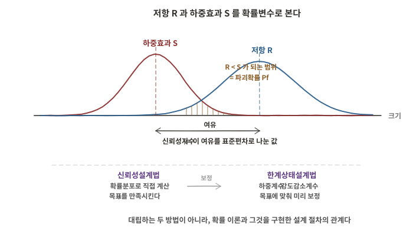
140-1-1-A01 저항과 하중효과의 분포, 신뢰성지수, 부분안전계수의 관계
문항 2출처제140회 1교시 2번
철근의 부식원인과 방식방법
철근콘크리트에서 철근의 부식원인과 방식방법에 대하여 설명하시오.
콘크리트구조제140회 1교시서술형10점
모범답안
【핵심 키워드】 철근은 콘크리트의 고알칼리 부동태 피막으로 보호된다 / 부식은 그 피막이 깨지는 데서 시작 — 탄산화와 염화물 / 부피 팽창이 균열을 만들고 균열이 다시 부식을 가속하는 되먹임 / 방식은 침투를 늦추는 쪽과 반응을 막는 쪽
Ⅰ. 부식의 성립 — 콘크리트 세공용액은 강알칼리 환경이며, 이 조건에서 철근 표면에 부동태 피막이 형성되어 부식이 억제된다. 부식은 이 피막이 깨질 때 시작되고, 이후 물과 산소가 공급되면 진행된다. 부식생성물은 원래 부피의 몇 배로 팽창하므로 피복에 균열과 박리를 일으키고, 그 균열이 다시 침투 경로가 되어 부식을 가속하는 되먹임 구조를 갖는다.
Ⅱ. 부식원인
탄산화 : 대기 중 이산화탄소가 침투해 수산화칼슘과 반응하면 pH가 낮아져 부동태 피막이 유지되지 않는다
염화물 침투 : 해안 환경이나 제빙염, 또는 배합 시 혼입된 염화물이 임계량을 넘으면 피막이 국부적으로 파괴되어 공식(pitting) 이 생긴다
진행 조건 : 물과 산소의 공급, 온도와 습도, 콘크리트의 전기저항이 부식 속도를 좌우한다
설계 단계의 결정이 지배한다. 피복두께와 배합, 균열 제어는 시공 후 바꾸기 어렵고, 사후 대책은 비용이 훨씬 크다
문항 3출처제140회 1교시 3번
다발철근의 사용 목적과 배치 기준
철근콘크리트 부재에서 다발철근의 사용 목적과 배치 기준(KDS 14 20 50 콘크리트 구조 철근상세 기준)에 대하여 설명하시오.
콘크리트구조제140회 1교시서술형10점
모범답안
【핵심 키워드】 목적은 철근 혼잡의 완화와 콘크리트 충전성 확보 / 개수 4개 이하, 스터럽·띠철근으로 둘러싸기, 보에서 D35 초과 불가 / 간격과 피복은 등가지름으로 본다 / 개개 철근은 40db 이상 엇갈리게 끝낸다
Ⅰ. 사용 목적 — 배근량이 많은 기둥이나 큰 보에서 철근을 하나씩 배치하면 간격이 좁아져 콘크리트가 채워지지 않고 다짐이 어려워진다. 여러 개를 묶어 다발로 두면 같은 철근량을 유지하면서 철근 사이의 통로를 확보할 수 있고, 거푸집 내 배근 작업도 단순해진다. 즉 강도를 얻기 위한 방법이 아니라 시공성과 충전성을 확보하기 위한 방법이다.
Ⅱ. 배치 기준
다발의 구성 : 2개 이상의 철근을 묶어 쓰는 다발철근은 이형철근으로 하고 개수는 4개 이하여야 하며, 스터럽이나 띠철근으로 둘러싸여야 한다. 보에서는 D35를 초과하는 철근을 다발로 쓸 수 없다
등가지름 : 다발철근의 간격과 최소 피복두께를 철근지름으로 나타낼 경우, 다발철근의 지름은 등가단면적으로 환산된 한 개의 철근지름으로 본다
피복두께 : 다발철근의 피복두께는 50 mm와 등가지름 중 작은 값 이상이어야 한다. 흙에 접하여 콘크리트를 친 후 영구히 흙에 묻히는 경우 75 mm 이상, 수중 타설의 경우 100 mm 이상이다
철근 끝단의 엇갈림 : 휨부재의 경간 내에서 끝나는 한 다발철근 내의 개개 철근은 40db 이상 서로 엇갈리게 끝나야 한다
정착길이는 다발이 아닌 경우의 각 철근 정착길이에 대해 3개 다발은 20%, 4개 다발은 33%를 증가시킨다. 이 조항은 KDS 14 20 52 정착 및 이음 설계기준에 규정되어 있어 발문이 지정한 14 20 50과 소속이 다르다
Ⅲ. 결론
간격과 피복을 철근지름으로 규정할 때에는 다발을 등가단면적의 한 개 철근지름으로 환산해 적용한다. 정착길이를 늘리는 것도 다발이 되면 둘레가 줄어 부착이 불리해지기 때문이며, 이 취지를 놓치면 기준의 이유가 설명되지 않는다
다발을 쓰기 전에 철근 지름을 키우거나 고강도 철근으로 바꾸는 대안을 함께 검토한다. 혼잡 해소가 목적이라면 그쪽이 더 단순한 경우가 많다
다발을 채택했다면 배근도에 다발 구성과 이음 위치를 명시하고, 굵은 골재 최대치수와 다짐 계획을 함께 확인한다. 시공성을 얻으려고 쓴 방법이 시공 단계에서 다시 문제가 되지 않도록 하는 것이 요점이다
문항 4출처제140회 1교시 4번
건설사업관리에 스마트건설기술 적용 시 단계별 주요내용
건설사업관리에 스마트건설기술 적용 시 단계별 주요내용에 대하여 설명하시오.
토목구조 일반제140회 1교시서술형10점
모범답안
【핵심 키워드】 단계마다 다루는 데이터가 다르다 / 축은 BIM을 중심으로 한 데이터의 연속성 / 단계 간에 데이터가 끊기면 도구를 아무리 넣어도 효과가 누적되지 않는다
Ⅰ. 서론 — 스마트건설기술은 개별 도구의 나열이 아니라 사업 전 단계에 걸쳐 데이터를 잇는 체계로 볼 때 의미가 있다. 건설사업관리 관점에서는 각 단계에서 어떤 데이터를 만들고 다음 단계로 무엇을 넘기는지가 핵심이며, 그 연결이 끊기면 단계마다 다시 입력하는 비용이 이익을 상쇄한다.
Ⅱ. 단계별 주요내용
단계
적용 기술
CM 관점의 관리행위
조사·계획
드론·라이다 측량, 3차원 지형모델
대안 비교와 의사결정 지원
설계
BIM 기반 3차원 설계, 간섭 검토
설계검토·VE, 공사비와 수량 검증
시공
건설기계 자동화, IoT 계측, 스마트 안전관리
공정·품질·안전·기성 관리
준공·인계
준공 모델, 시공 이력 데이터
디지털 성과품 검수와 자산정보 인계
유지관리
디지털 트윈, 계측 연계
점검·보수 이력 축적과 자산관리
기술 자체보다 그 기술이 어떤 관리행위를 뒷받침하는가가 건설사업관리의 관점이다. 단계마다 다루는 데이터의 성격도 다르다. 조사는 지형, 설계는 형상과 수량, 시공은 공정과 계측, 유지관리는 이력이며, 이를 BIM과 공통데이터환경(CDE) 등을 통해 단계 간에 연계·승계하는 것이 실질이다
Ⅲ. 결론
도구 도입보다 데이터 연속성이 어렵다. 단계 간 인수인계 형식과 책임, 데이터 표준이 정해져 있지 않으면 각 단계의 성과가 다음 단계로 이어지지 않는다
발주 방식과 대가 기준, 성과품 규정이 함께 정비되어야 실제로 작동한다. 기술의 문제만이 아니라 사업관리 체계의 문제로 접근해야 한다
효과를 확인하려면 측정 지표가 필요하다. 설계변경 건수, 재시공률, 안전사고, 유지관리 자료의 완성도처럼 단계 간 데이터 연속성이 실제로 개선되었는지 볼 수 있는 지표를 사업 초기에 정해두어야 한다
문항 5출처제140회 1교시 5번
볼트접합부의 파괴형식
볼트접합부의 파괴형식에 대하여 설명하시오.
강구조제140회 1교시서술형10점
모범답안
【핵심 키워드】 볼트의 전단·인장과 접합판의 지압·순단면 인장·블록전단·연단부 파괴를 각각 한계상태로 검토한다 / 가장 작은 강도가 지배강도 / 마찰접합은 미끄럼 한계상태를 추가로 본다
Ⅰ. 서론 — 볼트접합부의 설계는 볼트 자체의 전단·인장과 접합판의 지압·순단면 인장·블록전단·연단부 파괴 등 가능한 한계상태를 각각 검토하고, 가장 작은 강도를 지배강도로 삼는 방식으로 이루어진다. 검토식과 대책이 형식마다 다르므로 형식을 나누어 보는 것이 설계의 출발점이다.
Ⅱ. 파괴형식
볼트의 전단파괴 : 볼트 축에 직각인 면에서 볼트가 끊어진다. 전단면이 나사부에 걸리는지 여부에 따라 강도가 달라진다
판의 지압파괴 : 볼트가 판을 눌러 구멍이 늘어난다. 판 두께와 연단거리, 볼트 간격이 지배 인자다
마찰접합에서는 미끄럼 한계상태를 추가로 검토하며, 미끄럼 이후에는 볼트와 판의 지압거동이 발생할 수 있다. 접합에 요구되는 성능에 따라 어느 한계상태를 지배로 볼지가 달라진다
Ⅲ. 결론
가장 작은 강도가 지배강도가 된다. 여러 한계상태를 각각 계산해 최솟값을 쓰는 구조이므로, 한 형식만 검토하면 실제 내력을 과대평가할 수 있다
연단거리와 볼트 간격은 지압·블록전단·연단 찢김을 한꺼번에 좌우한다. 배치 규정이 강도 검토와 분리된 형식적 조건이 아닌 이유다
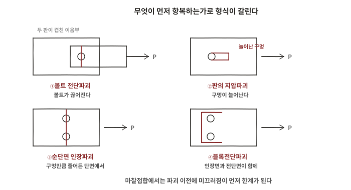
140-1-5-A01 볼트접합부의 주요 파괴형식
문항 6출처제140회 1교시 6번
지배단면의 구분과 강도감소계수
한계상태설계법에서 지배단면을 구분하고, 강도감소계수에 대하여 설명하시오.
콘크리트구조제140회 1교시서술형10점
모범답안
【핵심 키워드】 구분 기준은 최외단 인장철근의 순인장변형률 εt / 인장지배 한계 εt ≥ 0.005 (fy > 400 MPa이면 항복변형률의 2.5배) / φ = 인장지배 0.85, 압축지배 나선철근 0.70·그 외 0.65, 변화구간은 그 사이를 증가 / 연성이 확보될수록 계수를 크게 준다
Ⅰ. 지배단면의 구분 — 공칭강도에 도달할 때 최외단 인장철근의 순인장변형률 εt를 기준으로 구분한다. εt가 압축지배 변형률한계 이하이면 압축지배단면, 0.005의 인장지배 변형률한계 이상이면 인장지배단면, 그 사이는 변화구간 단면이다. 압축지배 변형률한계는 균형변형률 상태에서 인장철근의 순인장변형률과 같다. 철근 항복강도가 400 MPa을 초과하면 인장지배 변형률한계를 철근 항복변형률의 2.5배로 한다. 압축지배단면은 인장철근의 충분한 항복과 연성변형 전에 압축측 콘크리트가 한계변형에 도달하므로 상대적으로 취성적인 파괴양상을 보인다.
Ⅱ. 강도감소계수
정의 : 재료강도와 치수의 변동, 시공 오차, 설계식의 근사에서 오는 불확실성을 반영해 공칭강도를 낮추는 계수다. 설계강도 = φ× 공칭강도
지배단면별 값 : 인장지배단면 0.85, 압축지배단면은 나선철근으로 보강된 부재 0.70, 그 외의 철근콘크리트 부재 0.65
변화구간 : εt가 압축지배 변형률한계에서 인장지배 변형률한계로 증가함에 따라 φ 값을 압축지배단면에 대한 값에서 0.85까지 증가시킨다
파괴 양상의 반영 : 같은 불확실성이라도 취성적인 파괴양상을 보이는 쪽에 더 큰 여유를 둔다. 압축지배단면의 계수가 작은 이유가 여기에 있다
압축지배단면에서 나선철근 부재가 0.70으로 더 큰 것은 구속이 연성을 높이기 때문이다. 같은 압축지배라도 파괴 이후의 거동이 다르다는 점이 계수에 반영되어 있다
균형변형률 상태는 인장철근이 항복강도에 대응하는 변형률에 도달하는 동시에 압축 콘크리트가 극한변형률에 도달하는 상태다. 프리스트레스트콘크리트는 최외단 긴장재의 순인장변형률을 기준으로 하며 압축지배 변형률한계를 0.002로 한다
위 값은 KDS 14 20 20의 지배단면 정의와 KDS 14 20 10의 강도감소계수 규정에 따른다
Ⅲ. 결론
구분의 목적은 연성 확보다. 변형률로 단면을 나누고 계수를 달리 주는 것은 설계자가 인장지배 쪽으로 단면을 잡도록 유도하는 장치다
철근량을 늘리면 강도는 커지지만 εt가 줄어 계수가 작아지므로 설계강도가 오히려 기대만큼 늘지 않는다. 단면 검토에서 이 되먹임을 확인해야 한다
문항 7출처제140회 1교시 7번
산악 교량 설계를 위한 기본계획 시 고려사항
산악 교량 설계를 위한 기본계획 시 고려사항에 대하여 설명하시오.
교량공학제140회 1교시서술형10점
모범답안
【핵심 키워드】 산악부는 접근성과 시공 조건이 설계를 제약한다 / 고교각·급경사·계곡 횡단 / 가설공법이 경간분할을 결정하는 경우가 많다 / 환경 훼손 최소화와 유지관리 접근성
Ⅰ. 서론 — 산악 교량은 평지 교량과 같은 형식을 쓰더라도 계획을 지배하는 조건이 다르다. 진입로 확보와 자재 반입이 어렵고, 교각이 높아지며, 지형과 지반 조건의 변화가 크다. 산악부에서는 가설조건이 구조형식과 경간분할을 강하게 제약하므로, 기본계획 단계부터 구조계획과 가설계획을 병행해 반복 검토한다.
Ⅱ. 고려사항
지형과 지반 : 급경사와 계곡 횡단, 사면 안정, 기반암 심도의 변화, 낙석과 토석류. 교각 위치가 지형과 지반 조건에 크게 구속된다
가설공법과 시공성 : 진입로와 작업장 확보, 대형 장비 반입 가능 여부, 크레인 가설과 FCM·ILM 등의 적용성. 가설공법이 경간과 형식을 되돌려 정한다
구조 계획 : 고교각의 세장효과와 좌굴 안정성, 지진 시 거동, 상부구조와 교각의 강성 배분, 풍하중
선형과 안전 : 급구배와 곡선 반경, 종단선형과 시거, 결빙 구간 대책
환경과 인허가 : 수목 훼손과 절토 최소화, 생태 축 단절 방지, 공사용 도로의 원상복구
유지관리 : 점검 접근로와 점검시설, 고교각 상부의 접근성. 준공 후 접근이 어려우면 점검이 형식화된다
이 조건들은 서로 맞물려 있다. 환경 훼손을 줄이려 진입로를 최소화하면 가설 장비가 제한되고, 그것이 다시 경간분할과 형식을 좌우한다
Ⅲ. 결론
구조계획과 가설계획을 병행한다. 산악부에서는 시공 조건이 형식 선정을 강하게 제약하므로, 지형·지질, 경간, 형식, 가설공법을 서로 되짚어가며 결정해야 한다
준공 후 접근성이 나쁘면 유지관리 비용이 급격히 커진다. 점검시설을 설계에 포함해 생애주기 관점에서 판단해야 한다
문항 8출처제140회 1교시 8번
전단 중심
전단 중심에 대하여 설명하시오.
구조역학제140회 1교시서술형10점
모범답안
【핵심 키워드】 그 점을 지나도록 횡하중을 주면 비틀림이 생기지 않는 점 / 전단흐름의 합력이 지나는 위치 / 도심과 일치하지 않을 수 있다 — 단면의 대칭성이 가른다 / 개단면에서 특히 문제가 된다
Ⅰ. 정의 — 전단 중심은 단면의 전단응력 또는 전단흐름이 만드는 합력의 작용선이 지나는 점이며, 횡하중의 작용선이 이 점을 지나면 부재에 비틀림이 생기지 않는다. 하중이 이 점을 벗어나면 그 편심만큼 비틀림모멘트가 함께 작용한다.
Ⅱ. 위치와 성질
두 축 대칭 단면 : 전단 중심과 도심이 일치한다. 사각형이나 I형 단면이 여기에 해당한다
한 축 대칭 단면 : 전단 중심은 대칭축 위에 있으나 도심과 일치하지 않는다. 채널(ㄷ형) 단면에서는 복부 바깥쪽에 놓인다
점대칭 단면 : Z형처럼 점대칭인 단면은 전단 중심이 도심과 일치한다
얇은 개단면 : 비틀림 강성이 작아 편심의 영향이 크다. 각형강관 같은 폐단면은 비틀림에 강해 상대적으로 둔감하다
균질한 단일재료 단면에서는 전단 중심의 위치가 단면 형상과 대칭성으로 정해지며 하중 크기에는 무관하다. 재료가 달라지는 복합단면에서는 각 재료의 탄성계수까지 함께 고려해야 한다
Ⅲ. 결론
개단면 부재에서 실무상 중요하다. 채널이나 앵글을 도심에 하중이 오도록 배치하면 의도치 않은 비틀림과 횡비틀림좌굴을 부른다
하중을 전단 중심에 맞추기 어려우면 비틀림을 받는 것으로 보고 설계하거나, 가로보나 브레이싱으로 비틀림을 구속하는 대안을 검토한다
비대칭 단면을 조합해 쓸 때는 개별 부재의 전단 중심과 조합 단면의 전단 중심이 다르다. 접합 상세가 두 부재를 일체로 거동시키는지에 따라 위치가 달라지므로, 조합 여부를 가정하고 계산했는지 밝혀야 한다
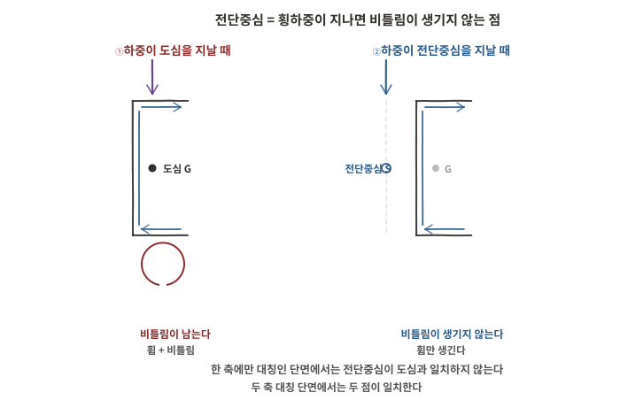
140-1-8-A01 하중이 도심을 지날 때와 전단중심을 지날 때
문항 9출처제140회 1교시 9번
대변위 이론
도로교설계기준(한계상태설계법)에서 교량의 구조해석 모델 중 대변위 이론에 대하여 설명하시오.
교량공학제140회 1교시서술형10점
모범답안
【핵심 키워드】 평형을 변형 후 형상에서 세운다 / 소변위 이론은 변형 전 형상에서 세운다 / 변위와 단면력이 서로 영향을 주고받아 중첩이 성립하지 않는다 / 케이블교와 세장한 부재에서 필요해진다
Ⅰ. 정의 — 소변위 이론은 변형이 작다고 보고 변형 전 형상에서 평형방정식을 세운다. 이에 비해 대변위 이론은 변형 후 형상에서 평형을 세워 변위가 단면력에 미치는 영향을 반영한다. 축력이 있는 부재가 휘면 그 축력이 추가 휨모멘트를 만들고, 그 휨모멘트가 다시 변위를 키우는 상호작용을 해석에 포함하는 것이다.
Ⅱ. 특징과 적용
중첩의 원리가 성립하지 않는다. 각 하중상태를 직접 해석하며, 일반적으로 증분·반복해석으로 변형 후 형상에서의 평형을 만족시킨다
적용 대상 : 케이블교의 주케이블과 행어, 사장교의 케이블 새그 효과, 세장한 압축부재의 2차 효과(P-Δ, P-δ), 아치교와 대변형이 예상되는 가설 단계
기하 비선형에 해당한다. 재료가 탄성이어도 형상 변화 때문에 비선형 거동이 나타나므로, 재료 비선형과는 구분해 다룬다
초기 형상과 초기 장력의 설정이 결과를 좌우한다. 케이블 구조에서는 무응력 길이나 초기 평형 형상을 먼저 정해야 해석이 성립한다
Ⅲ. 결론
변위가 작으면 두 이론의 차이가 사라진다. 대변위 해석을 쓸지 여부는 구조 형식과 세장비, 축력 수준으로 판단하며, 필요 없는 경우까지 적용하면 계산 부담만 커진다
대변위 해석은 모델 가정과 수렴 조건에 결과가 민감하다. 초기 형상, 하중 재하 순서가 문제되는 경우 그 순서, 수렴 판정 기준을 기록해 두어야 검증이 가능하다
소변위 해석 결과와 대조해 두면 판단에 도움이 된다. 두 결과의 차이가 작으면 대변위 효과가 지배하지 않는다는 뜻이고, 크면 그 원인이 어느 항에서 오는지를 확인할 단서가 된다
문항 10출처제140회 1교시 10번
비세장판 단면 강압축부재의 휨좌굴강도
공항의 격납고에 사용되는 비세장판 단면을 갖는 강압축부재의 휨좌굴에 대한 압축강도에 대하여 설명하시오. (KDS 14 31 10 강구조부재 설계기준(하중저항계수설계법))
강구조제140회 1교시서술형10점
모범답안
【핵심 키워드】 비세장판 단면 → 국부좌굴이 전체좌굴보다 먼저 오지 않는다 / 다만 단면 형상에 따라 비틀림·휨비틀림좌굴도 함께 검토하고 그중 작은 값을 쓴다 / 판정은 KL/r = 4.71√(E/F_y) 또는 F_y/F_e = 2.25를 경계로 / φ_c = 0.90
Ⅰ. 비세장판 단면의 의미 — 압축부재의 판요소는 폭두께비가 크면 부재 전체가 좌굴하기 전에 판이 먼저 국부좌굴한다. 비세장판 단면은 폭두께비가 규정된 한계 이하여서 국부좌굴이 전체좌굴에 앞서지 않는 단면이며, 이 경우 단면이 항복강도까지 저항할 수 있으므로 국부좌굴에 따른 추가 저감 없이 부재의 전체 좌굴강도를 산정할 수 있다.
다만 비세장판이라고 해서 검토할 한계상태가 휨좌굴 하나로 줄어드는 것은 아니다. 표 4.2-1은 단면 형상별로 적용 절과 한계상태를 정하며, H형이나 ㄷ형·T형 단면은 휨좌굴(4.2.3)과 비틀림좌굴 또는 휨비틀림좌굴(4.2.4)을 함께 검토하고 각형강관 같은 단면은 휨좌굴만 본다
비틀림에 대한 유효 비지지길이가 휨좌굴에 대한 것보다 큰 경우, H형강과 유사한 형상의 기둥은 4.2.4를 따른다
Ⅱ. 휨좌굴에 대한 압축강도
공칭압축강도는 P_n = F_cr · A_g 이며, 적용하는 휨좌굴·비틀림좌굴·휨비틀림좌굴의 한계상태 중 작은 값으로 한다. 임계좌굴응력 F_cr 은 세장비에 따라 두 식으로 나뉜다
탄성좌굴응력 : F_e = π²E / (KL/r)² (MPa). K는 유효길이계수, L은 휨좌굴에 대한 비지지길이, r은 좌굴축에 대한 단면2차반경이다
KL/r ≤ 4.71√(E/F_y) 또는 F_y/F_e ≤ 2.25 인 경우 : F_cr = [0.658^(F_y/F_e)] · F_y
비탄성 좌굴 영역이다. 잔류응력과 초기 변형의 영향으로 탄성식보다 낮은 강도를 준다
KL/r > 4.71√(E/F_y) 또는 F_y/F_e > 2.25 인 경우 : F_cr = 0.877 · F_e
탄성 좌굴 영역이며, 계수 0.877은 초기 변형의 영향을 반영한 저감이다
설계압축강도는 φ_c · P_n 이고 φ_c = 0.90 을 적용한다
위 내용은 KDS 14 31 10의 4.2.1 및 표 4.2-1, 그리고 4.2.3에 따른다
Ⅲ. 결론
비세장판이라는 조건이 국부좌굴 저감을 덜어준다. 세장판 단면이라면 국부좌굴을 반영한 저감을 함께 적용해야 하므로 검토가 한 단계 늘어난다
격납고처럼 층고가 큰 구조에서는 비지지길이와 지지조건이 강도를 지배한다. 두 주축의 세장비를 각각 계산해 큰 쪽으로 검토해야 한다
문항 11출처제140회 1교시 11번
도로교와 철도교의 설계 하중 비교
도로교와 철도교의 설계 하중을 비교하여 설명하시오.
교량공학제140회 1교시서술형10점
모범답안
【핵심 키워드】 철도교는 주행 위치가 궤도로 고정되어 재하 경로와 반복이 명확하다 / 큰 집중축중이 규칙적으로 반복되어 피로와 사용성 검토의 비중이 크다 / 도로교는 재하 위치가 자유로워 영향선으로 최악 배치를 찾는다 / 철도교에서 별도로 고려하는 특유 작용이 있다
Ⅰ. 차이의 근원 — 두 교량의 하중 체계가 다른 이유는 통행 방식이 다르기 때문이다. 철도 차량은 궤도를 따라 정해진 위치로 지나가고 축배치가 규격화되어 있어 재하 위치와 반복 횟수를 특정할 수 있다. 도로 차량은 차로 안에서 위치가 변하고 차종도 다양해 통계적으로 다룬다.
Ⅱ. 비교
구분
도로교
철도교
활하중
표준트럭·차로하중, 다차로 재하계수
표준열차하중, 궤도별 재하
재하 위치
차로 내에서 변동, 영향선으로 최악 배치 탐색
궤도 중심으로 고정
충격
동적 증가계수
속도·궤도상태 등을 반영한 동적증가를 고려
수평 하중
제동하중, 원심하중
시동·제동하중, 원심하중, 횡압(사행동)과 좌굴 저항
특유 작용
해당 없음
궤도–교량 상호작용에 의한 종방향력(장대레일)
피로
검토 대상
반복 횟수와 재하경로가 명확하여 검토의 비중이 크다
철도교에서 별도로 고려하는 특유 작용이 있다. 궤도–교량 상호작용에 의한 종방향력, 탈선하중, 사행동에 의한 횡압이 대표적이며, 이는 궤도와 구조물이 힘을 주고받기 때문이다
Ⅲ. 결론
철도교는 사용성과 피로가 강도만큼 중요하다. 처짐과 진동, 뒤틀림이 주행 안전과 승차감에 직결되므로 강도 검토만으로 설계가 끝나지 않는다
궤도와 구조물의 상호작용 검토가 철도교의 고유 항목이다. 장대레일을 부설하면 레일과 상부구조가 축방향으로 힘을 주고받으므로 신축이음과 지점 조건을 함께 정해야 한다
도로교는 재하 위치가 자유로워 영향선으로 최악 배치를 찾는 과정이 설계의 한 축을 이룬다. 철도교는 그 위치가 정해져 있는 대신 반복 횟수가 명확해 피로 검토의 비중이 커진다. 같은 활하중이라도 다루는 방식이 다른 이유다
문항 12출처제140회 1교시 12번
케이블교의 플러터
케이블교에서 발생하는 플러터(Flutter)의 정의와 영향인자에 대하여 설명하시오.
교량공학제140회 1교시서술형10점
모범답안
【핵심 키워드】 바람에서 구조로 에너지가 계속 공급되어 진폭이 커지는 자발진동 / 휨과 비틀림이 연성되며 발산한다 / 한계풍속을 넘으면 짧은 시간에 붕괴로 이어질 수 있다 / 단면 형상과 비틀림 강성, 감쇠가 인자
Ⅰ. 정의 — 플러터는 바람을 받는 구조물이 진동할 때 그 진동에 의해 발생한 공기력이 다시 진동을 키우는 방향으로 작용해, 진폭이 시간에 따라 발산하는 자발진동(self-excited vibration) 현상이다. 통상 휨과 비틀림 모드가 연성되어 나타나며, 어떤 풍속을 넘으면 감쇠가 음(陰)이 되어 진동이 스스로 커진다. 그 풍속을 플러터 한계풍속이라 한다.
Ⅱ. 영향인자
단면의 공기역학적 형상 : 형상이 플러터 안정성을 좌우한다. 유선화, 페어링, 플랩, 그레이팅 등으로 공기력 특성을 개선할 수 있다
휨·비틀림 고유진동수와 그 비 : 모드 연성과 플러터 한계풍속에 영향을 주는 주요 인자다. 비틀림 강성이 그 진동수를 좌우한다
구조 감쇠 : 감쇠가 클수록 한계풍속이 높아진다. 제진장치로 감쇠를 보완할 수 있다
질량과 질량관성모멘트 : 고유진동 특성과 공력–구조 연성에 영향을 주므로 한계풍속 산정의 주요 변수다
받음각과 지형 : 풍향과 받음각, 계곡 지형에 의한 흐름 변화가 한계풍속을 낮출 수 있다
플러터는 한계풍속을 설계풍속보다 충분히 높게 확보하는 방식으로 다룬다. 진폭을 허용치 이하로 관리하는 와류진동과는 대응 방식이 다르다
Ⅲ. 결론
발산형 현상이라는 점이 다른 진동과 다르다. 와류진동은 특정 풍속대에서 진폭이 제한되지만, 플러터는 한계를 넘으면 짧은 시간에 큰 손상으로 이어질 수 있다
장대 케이블교나 공기역학적 민감성이 큰 교량에서는 풍동실험이 중요하다. 해석만으로 공기력 계수를 확정하기 어려우므로 단면모형과 전교모형 실험으로 한계풍속과 공력 특성을 검증한다
문항 13출처제140회 1교시 13번
등방성 재료의 전단탄성계수 관계식 유도
등방성 재료에서 전단탄성계수 G = E / [2(1+ν)] 의 관계식을 유도하고, 이 관계식이 성립하기 위한 가정과 공학적 의의를 설명하시오. (단, E는 탄성계수, ν는 푸아송비)
구조역학제140회 1교시계산형10점
모범답안
【핵심 키워드】같은 응력상태를 두 좌표계에서 보는 것이 유도의 뼈대 / 순수전단 = 45° 방향의 인장·압축 2축 상태 / 두 관점이 같은 변형을 서술하므로 γ/2 = ε / 등방·선형탄성·미소변형이 전제
Ⅰ. 유도 — 순수전단 상태의 요소를 두 좌표계에서 본다.
전단 관점 : 전단응력 τ만 작용하므로 전단변형률은 γ = τ / G 다
45° 회전 관점 : 같은 응력상태를 45° 돌려 보면 한 대각선 방향에 σ1 = +τ, 직교 방향에 σ2 = −τ 가 작용하는 2축 응력상태가 된다
그 대각선 방향의 수직변형률에 후크의 법칙을 적용하면
ε = (σ1−ν·σ2)/E = (τ + ν·τ)/E = (1 + ν)·τ / E
두 관점의 연결 : 미소변형에서 전단변형률 γ에 대응하는 대각선 방향 수직변형률은 γ/2 이므로 γ/2 = ε
τ/(2G) = (1 + ν)τ/E → G = E / [2(1 + ν)]
Ⅱ. 가정과 의의
가정 : 재료가 등방성 · 선형탄성 · 미소변형일 것. 등방성이 깨지면 방향마다 상수가 달라지고, 미소변형이 깨지면 γ/2 = ε 의 기하 관계가 성립하지 않는다
의의 1 : 등방성 재료의 독립한 탄성상수가 둘뿐임을 보인다. E, ν, G 중 두 개를 알면 나머지가 정해지므로 시험 항목을 줄일 수 있다
의의 2 : 등방성 선형탄성체의 이론적 안정범위는 −1 < ν < 0.5 이며, 일반적인 구조재료는 대체로 0 < ν < 0.5 에 놓인다. 이 범위에서 G는 E의 약 1/3에서 1/2 사이가 되며, 강재는 ν≈ 0.3 이므로 G ≈ 0.385E 다
ν → 0.5 이면 G → E/3 이고 체적변화가 없는 비압축성에 가까워진다. 음의 푸아송비를 갖는 재료도 존재하므로 0 < ν 를 일반 조건으로 두지는 않는다
Ⅲ. 결론
유도의 뼈대는 좌표변환이다. 새로운 물리를 도입한 것이 아니라 같은 상태를 다른 각도에서 본 것뿐이다. 등방성·선형탄성이라는 전제에서 독립 탄성상수가 둘이므로, 두 상수를 알면 나머지가 결정된다
이방성 재료에는 적용할 수 없다. 목재나 복합재료처럼 방향에 따라 성질이 다른 재료에서는 G를 별도로 측정해야 한다
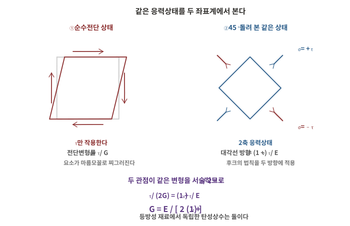
140-1-13-A01 순수전단 요소와 45° 회전 요소
문항 1출처제140회 2교시 1번
콘크리트 바닥판의 경험적 설계법
도로교설계기준(한계상태설계법)의 강교편에 규정된 콘크리트 바닥판의 경험적 설계법에 대하여 설명하시오.
교량공학제140회 2교시서술형25점
모범답안
【핵심 키워드】 주요 구조적 거동을 휨이 아닌 아치 작용으로 본다 → 해석을 요구하지 않는다 / 강교편이 허용하고 콘크리트교편이 세부를 정한다 / 조건을 만족하면 한계상태 요구를 만족한 것으로 가정 / 4개 층 모두 0.3% 이상 — 차등 없음 / 캔틸레버 바닥판에는 적용 불가
Ⅰ. 서론 — 경험적 설계법은 바닥판 계산을 줄인 간이법이 아니라, 윤하중을 지지하는 바닥판의 주요 구조적 거동이 휨이 아니라는 사실에 근거한 별개의 설계체계다. 전통적 설계법이 바닥판을 단위폭 보로 보고 휨모멘트를 산정하는 데 비해, 이 방법은 규정된 조건을 모두 만족하면 윤하중에 대한 별도의 구조 해석 없이 정해진 최소철근을 배치한다. 따라서 조건을 몇 개 나열하느냐가 아니라, 각 조건이 아치 작용의 성립요건과 어떻게 대응하는지와 어디부터는 이 방법을 쓸 수 없는지를 가려내는 데서 답이 갈린다.
Ⅱ. 본론
규정 구조와 성립 근거
강교편은 허용하고 콘크리트교편은 세부를 정한다. 강교 설계기준은 규정된 조건을 만족하는 일체로 된 콘크리트 교량 바닥판에 대하여 어떤 해석도 요구하지 않는 경험적 설계를 허용하고, 그 세부 규정은 콘크리트교 설계기준의 경험적 설계법을 준용한다
나아가 그 규정을 만족하는 바닥판은 사용성·피로·파괴 및 극한한계상태의 요구를 모두 만족하는 것으로 가정할 수 있으며, 강교편 바닥판 조항의 다른 요구는 만족할 필요가 없다고 정한다
갈음되는 것이 구조 해석만이 아니다. 한계상태 검토까지 갈음된다. 그만큼 적용조건 판정의 무게가 크다
근거는 윤하중을 지지하는 바닥판의 주요한 구조적 거동이 휨이 아닌 아치 작용이라는 사실이다
해당 규정은 강교 설계기준(한계상태설계법)의 4.10.1과 4.10.3.1이며, 세부 조항은 KDS 24 14 21 콘크리트교 설계기준(한계상태설계법) 4.6.5.2 경험적 설계법이다
아치 작용이 성립하는 까닭은 바닥판이 거더·가로보·인접 바닥판에 둘러싸여 면내로 구속되기 때문이다. 균열 후 중립축이 상승하면서 단면에 압축 멤브레인력이 생기고 하중이 아치 형태의 압축대로 전달된다
아치의 수평반력을 공급하는 것은 이 외부 구속이며 철근이 아니다. 철근의 역할은 균열제어와 연성 확보, 국부 인장저항이다
적용은 3개 이상의 지지 거더와 합성으로 거동하고 바닥판의 지간 방향이 차량 진행 방향에 직각인 콘크리트 바닥판으로 한정된다
캔틸레버 바닥판에는 적용할 수 없으며, 이 경우 일반 슬래브 설계법을 따른다. 또한 이 절의 규정은 해당 절 이외의 어떤 항에도 적용할 수 없다
유효지간의 정의
벽체 또는 보와 일체인 경우 : 받침부 내면 사이의 순거리
거더로 지지된 경우 : 플랜지 끝까지의 거리에 복부 내면에서 플랜지 맨 끝단까지의 거리를 합한 값
유효지간은 형상비(6 이상 15 이하)와 상한(3.6 m) 두 조건에 동시에 들어간다. 정의를 거더 중심간 거리로 잘못 잡으면 적용 가능 여부의 판정 자체가 뒤집힌다
설계 조건
바닥판 두께는 흠집·마모·철근 피복 두께를 제외한 수치로 하며, 아래 조건을 모두 만족할 때에만 이 방법을 적용한다
구분
조건
지지·합성
콘크리트 거더 또는 강재 거더에 합성 지지되고, 지지 구조부재와 완전합성거동
전단연결재
위 조항을 만족하도록 바닥판과 주거더를 합성시키는 전단연결재를 충분히 배치
횡방향 부재
가로보 또는 격벽이 교각 선상에 설치
단면 형상
거더 플랜지부 헌치처럼 국부적으로 두껍게 한 곳을 제외하고 두께가 균일
형상비
바닥판 두께에 대한 유효지간의 비가 6 이상 15 이하
철근층 간격
상·하부 철근의 외측면 사이 두께가 150 mm 이상
유효지간
3.6 m를 초과하지 않을 것
최소 두께
흠집·마모면·보호피복두께층을 제외한 최소두께가 240 mm 이상
캔틸레버부
내민길이가 내측 바닥판 두께의 5배 이상, 또는 3배 이상이면서 연속인 콘크리트 방호책과 구조적으로 합성
재료·양생
현장 타설 후 습윤양생하며, 기준압축강도가 27 MPa 이상
조건들은 서로 무관한 체크리스트가 아니라 하나의 기구를 성립시키는 요건의 분해다. 구속이 끊기면 압축대가 형성되지 않고, 형상비가 벗어나면 아치가 닫히지 않는다
형상비에 상한과 하한이 함께 걸린 것이 이를 보여준다. 너무 두꺼우면 아치가 설 만큼 처지지 않고, 너무 얇으면 압축대 자체가 확보되지 않는다. 상한만 두는 통상의 형상 규정과 성격이 다르다
보강 철근량과 배치
현장 타설 콘크리트 바닥판에는 4개 층의 철근을 배치한다. 피복두께 요구 조건이 허용하는 한도에서 바깥 표면에 가까이 두고, 유효경간 방향 철근을 가장 바깥쪽 층에 둔다
철근 방향
위치
최소 철근량
경간 방향
하부
바닥판 단면의 0.3% 이상
경간 방향
상부
바닥판 단면의 0.3% 이상
경간 직각방향
하부
바닥판 단면의 0.3% 이상
경간 직각방향
상부
바닥판 단면의 0.3% 이상
네 개 층이 모두 같은 값이다. 방향이나 위치에 따른 차등이 없다는 점이 이 설계법의 성격을 그대로 보여준다. 윤하중의 재하 위치에 따라 압축대가 서는 방향이 계속 바뀌므로 특정 방향을 주철근으로 삼는 배근이 성립하지 않는다
철근의 종류와 배치 : SD400 이상을 쓰고, 모든 철근은 직선으로 배치하며 겹침이음만 사용할 수 있다
중심간격 : 100 mm 이상 300 mm 이하로 하되, 바닥판 지간방향의 하부 인장 주철근은 중심간격이 바닥판 두께를 넘지 않아야 한다
사교 : 경사각이 20°를 넘으면 단부 바닥판의 철근은 단부 끝단에서 바닥판 유효지간에 해당하는 위치까지 규정 철근량의 2배를 배치한다
적용 범위 밖 — 전통적 설계법
캔틸레버 바닥판 : 한쪽이 자유단이어서 구속이 성립하지 않는다. 방호책 충돌하중까지 포함해 일반 슬래브 설계법으로 설계한다
조건을 하나라도 충족하지 못하는 경우 : 네 층으로 구성된 철근이 배치되고 일반 사항에 부합되면 전통적 설계법을 적용한다
두 방법을 한 바닥판에 함께 쓰는 것이 정상이다. 거더 사이는 경험적 설계법으로, 내민부는 전통적 설계법으로 설계하고 두 영역의 철근을 연속시켜 정착한다
강 거더교에서는 상부구조의 면내 강성이 콘크리트교보다 작으므로, 가로보·격벽이 실제로 구속을 공급하는지 확인이 선행되어야 한다
Ⅲ. 결론
항목
내용
규정 구조
강교편이 허용 · 콘크리트교편이 세부 규정
설계 근거
주요 구조적 거동을 휨이 아닌 아치 작용으로 봄
갈음 범위
구조 해석 + 사용성·피로·파괴·극한한계상태 검토
핵심 수치
형상비 6~15 · 유효지간 3.6 m 이하 · 최소두께 240 mm · fck 27 MPa 이상
배근
4개 층 모두 0.3% 이상 · SD400 이상 · 간격 100~300 mm
적용 제외
캔틸레버 바닥판 · 조건 미충족 → 전통적 설계법
조건 판정이 곧 설계다. 해석을 하지 않으므로 조건을 하나라도 놓치면 검산으로 걸러낼 기회가 없다. 어느 조건을 어떤 값으로 만족했는지를 설계도서에 남기는 것이 이 방법을 쓰는 전제다
철근량에 차등이 없다는 점을 오해하지 않아야 한다. 4개 층이 모두 같은 최소값을 갖는 것은 아치의 방향이 특정되지 않기 때문이며, 철근이 적어도 되는 근거가 아니라 방향별 산정이 의미를 잃는다는 뜻이다
구속이 사라지는 곳에서 안전 여유가 급격히 떨어진다. 시공 중 가로보 미설치 상태는 완성계와 구속 조건이 다르므로, 완성계 기준의 판정을 시공 단계에 그대로 적용해서는 안 된다
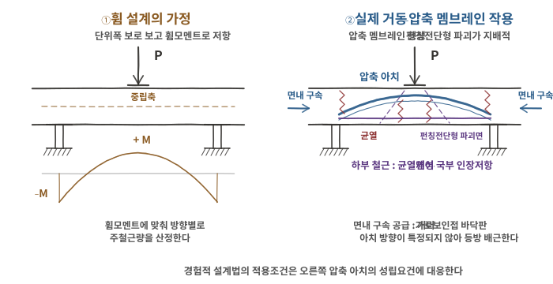
140-2-1-A01-v2 휨 설계의 가정과 실제 거동(아치 작용)의 비교
문항 2출처제140회 2교시 2번
곡선 구간 PSC 박스 거더교의 검토사항과 해석방법
평면선형이 곡선인 구간에 프리스트레스트 콘크리트 박스 거더(PSC Box Girder) 교량을 적용하려고 할 때, 주요 검토사항과 해석방법에 대하여 설명하시오.
교량공학제140회 2교시서술형25점
모범답안
【핵심 키워드】 곡선교의 지배 인자는 비틀림 / 곡률에 의한 휨·비틀림 연성 / 폐합 박스는 St. Venant 비틀림에 강하나 Distortion·전단지연은 별개 / 해석은 곡선 프레임 → 3차원 골조 → 판·쉘 / 받침 배치가 받침반력 불균등과 이동방향을 정한다
Ⅰ. 서론 — 평면선형이 곡선이면 직선교의 「휨 + 전단」 체계가 그대로 성립하지 않는다. 곡률 때문에 대칭 자중하에서도 비틀림이 발생할 수 있고 편측 활하중이 여기에 겹치므로, 단면력의 조합과 지점 반력의 분포가 직선교와 다른 양상을 갖는다. 따라서 이 문항은 검토사항을 열거하는 데서 끝나지 않고, 비틀림을 어떤 성분으로 나눌 것인가와 그 성분을 담을 수 있는 해석 모델을 어디까지 올릴 것인가를 함께 답해야 한다. 「폐합 박스단면은 비틀림에 강하다」로 마무리하는지, Distortion과 전단지연을 분리해 내는지에서 답이 갈린다.
Ⅱ. 본론
곡선 기하가 만드는 역학적 변화
평면곡률 때문에 부재의 국부축이 부재를 따라가며 회전한다. 그 결과 휨모멘트와 비틀림모멘트가 서로 분리되지 않고 연성(coupling)되어, 휨이 생기면 비틀림이 함께 생긴다
따라서 편심하중이 없어도 대칭 자중하에서 비틀림이 발생할 수 있다. 직선교에서 비틀림은 편측 재하의 결과이지만, 곡선교에서는 기하 자체가 원인이 된다
거동의 결과는 내·외측 연직변위 차와 받침반력의 불균등으로 나타나며, 곡률과 하중조건에 따라 부반력이 발생할 수 있다. 변위와 반력의 방향·크기는 하중배치, 받침조건, 곡률, 단면강성에 따라 달라지므로 특정 방향을 일반화하지 않는다
R이 크고 중심각이 작으면 직선교로 근사할 수 있다. 근사 가능 여부는 곡률반지름과 중심각, 그리고 개구 단면인지 폐합 단면인지에 따라 달라지므로, 적용하는 설계기준이 정한 조건을 확인해 판단한다
주요 검토사항
비틀림과 Distortion의 분리 : 폐합 박스단면은 폐합 전단흐름으로 저항하므로 St. Venant 비틀림 강성이 크다. 그러나 단면 형상 자체가 변형되는 Distortion과 그에 따른 휨응력은 별개의 문제이며, 격벽(다이어프램)의 배치와 간격으로 억제한다
「St. Venant 비틀림 강성이 크다」와 「Distortion이 작다」는 다른 이야기다. 두 성분을 하나로 묶으면 격벽 계획의 근거가 사라진다. 폭이 넓은 플랜지에서는 전단지연에 따른 유효 플랜지폭 저감도 함께 검토한다
프리스트레스도 곡선교에서 달라진다. 곡선 긴장재에는 곡률에 따른 반경방향 분력이 발생하므로, 정착부 및 곡률부에서 생기는 국부 횡방향 인장응력과 splitting·bursting에 대한 보강을 검토한다
평면 곡률과 긴장재 곡률이 중첩되면 편심이 부재축을 따라 계속 변한다. 프리스트레스 2차 부정정력을 곡선 기하에서 산정해야 하며, 직선교의 등가하중 치환을 그대로 쓸 수 없다
받침 배치와 지점 조건을 정한다. 방사 배치와 현(弦) 배치, 고정·가동의 조합을 결정한다. 곡선교의 받침 이동방향은 직선교처럼 단순 교축방향으로 설정할 수 없으며, 고정점과 평면곡률, 교축 접선방향 및 해석에서 산정된 실제 변위벡터를 고려하여 결정한다
부반력 발생 여부, 전도 안정, 신축이음의 이동 방향이 모두 이 결정에 딸려 온다. 받침 배치를 정하지 않으면 반력 검토 자체가 성립하지 않는다
시공 단계 : FCM·MSS·ILM 모두 곡선 대응이 필요하다. 단계별로 지지 조건과 편측 재하 상태가 달라 완성계보다 불리한 비틀림이 나올 수 있다
사용성·유지관리 : 내·외측 변위차와 편측 균열, 받침의 편심 마모, 배수 계획
해석방법 — 단계적으로 올린다
해석모델
주요 검토대상
곡선 Beam / Frame
전체 휨·비틀림, 지점반력
Grillage
횡방향 하중분배
3D Frame
공간거동, 받침반력, 횡격벽의 영향
Shell / FEM
Distortion, shear lag, 국부응력
위 표는 모델 형식의 단계다. 단계 시공 해석은 모델 형식이 아니라 검토 절차이므로 이와 구분하며, 가설순서, 단계별 지지조건, 비대칭 시공, 프리스트레스 도입, 크리프·건조수축 등 시간의존효과를 대상으로 한다
모델을 무조건 올리는 것이 아니라 무엇을 확인하려는가에 따라 선택한다. 전체 단면력과 받침 반력은 곡선 프레임으로 충분하고, 격벽 간격의 타당성과 국부응력을 확인해야 할 때 판·쉘로 올린다
상위 모델의 결과는 하위 모델 또는 손계산과 대조해 검증한다. 곡선교에서는 부호와 방향이 뒤집히기 쉬우므로, 전체 평형(ΣV, ΣM, 비틀림 총량)으로 되짚는다
Ⅲ. 결론
구분
내용
지배 인자
곡률에 의한 휨·비틀림 연성 — 대칭 자중하에서도 발생 가능
성분 분리
St. Venant 비틀림 / Distortion / 전단지연을 각각 검토
프리스트레스
긴장재 곡률의 반경방향 분력과 2차 부정정력
지점
받침 배치가 받침반력 불균등·부반력·이동방향을 결정
해석
곡선 프레임 → 3차원 골조 → 판·쉘, 확인 대상에 따라 선택
폐합 단면이라는 이유로 비틀림 검토를 갈음할 수 없다. 비틀림 강성이 큰 것은 St. Venant 성분에 대한 이야기이고, 격벽이 부족하면 Distortion 휨응력이 지배할 수 있다. 격벽 간격의 근거를 남기는 것이 이 형식의 핵심 설계 판단이다
받침 배치는 해석의 입력이자 결과다. 배치를 정해야 반력이 나오고, 반력을 봐야 배치가 타당한지 알 수 있다. 부반력이 나오면 배치·경간분할·단면 중 무엇을 바꿀지 먼저 정하고 반복하며, 결정 순서를 기록해 두어야 재검토가 가능하다
곡률이 작아도 시공 단계에서는 불리해질 수 있다. 완성계 기준으로만 검토하면 가설 중 편측 재하와 지지 조건 변화가 빠진다. 단계별 검토 결과를 완성계와 함께 제시하는 것이 원칙이다
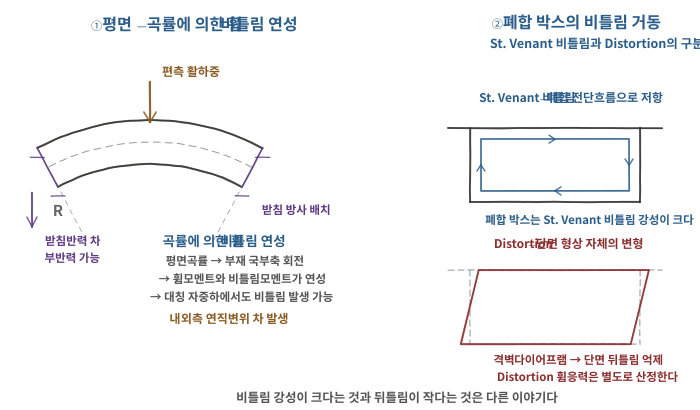
140-2-2-A01 곡률에 의한 휨·비틀림 연성(좌)과 St. Venant 비틀림·Distortion의 구분(우)
문항 3출처제140회 2교시 3번
교량 LCC 확률적 분석 절차와 순현재가치법
교량의 경제성(Life Cycle Cost, LCC) 분석 방법 중 확률적인 방법의 수행 절차와 경제성 평가 기법 중 순현재가치(Net Present Value, NPV)법에 대하여 설명하시오.
토목구조 일반제140회 2교시서술형25점
모범답안
【핵심 키워드】 두 물음은 병렬이다 — 확률적 방법은 불확실성 처리방법, NPV법은 시간가치 반영 경제성 평가방법 / 확률적 방법은 입력을 분포로 두고 결과도 분포로 얻는다 / 편익 비교는 NPV, 동일 기능 대안 비교는 비용현재가치 / 할인율과 분석기간이 결론을 좌우한다
Ⅰ. 서론 — 발문은 두 가지를 병렬로 묻는다. 확률적 LCC 분석은 비용·열화·보수 시점 등의 불확실성을 확률분포로 처리하는 분석방법이고, NPV법은 서로 다른 시점에 발생하는 편익과 비용을 현재가치로 환산해 경제성을 평가하는 평가방법이다. 한쪽이 다른 쪽의 결과 지표인 것이 아니라, 불확실성을 어떻게 다루는가와 시간가치를 어떻게 반영하는가라는 서로 다른 층의 물음이다. 두 방법은 실무에서 함께 쓰이지만 개념상 독립이며, 이 구분을 세우고 답하는지에서 답의 짜임새가 갈린다.
Ⅱ. 본론
LCC의 구성과 두 방법의 차이
LCC의 구성은 LCC = C_INI + C_MAI + C_USER + C_DIS − S 로 둔다. 초기 건설비, 유지관리비, 사용자비용, 해체·처분비의 합에서 잔존가치를 뺀 값이다
점검·유지보수·보수·보강·교체는 모두 유지관리비 C_MAI 안에 포함시킨다. 보수·보강비를 유지관리비와 나란한 항목으로 세우면 이중 계상의 위험이 생긴다
결정론적 방법 : 각 항목을 단일 추정값으로 고정해 대안별 LCC를 하나의 값으로 산정한다. 계산이 간단하고 의사결정이 명확하다
확률적 방법 : 열화 시점, 보수 주기, 공사단가, 할인율, 교통량 등을 확률변수로 두고 결과를 분포로 얻는다. 대안 간 차이가 입력 불확실성보다 작으면 그 사실이 드러난다
두 방법은 우열 관계가 아니다. 대안 간 LCC 차이가 크고 명확하면 결정론적 방법으로 충분하고, 차이가 작아 판단이 갈리는 경우에 확률적 방법이 값을 갖는다
확률적 방법의 수행 절차
① 분석목적·대안·기간 설정 : 대안, 비용 항목, 분석기간을 정한다. 대안의 수명이 다르면 공통 분석기간을 세우고 잔존가치로 조정한다
② 비용항목 및 현금흐름 정의 : 각 항목을 시점별 현금흐름으로 전개한다. 발생 시점이 정해지지 않으면 할인 자체가 불가능하다
③ 확률변수·분포·상관관계 설정 : 결과에 민감한 변수만 확률변수로 두고 나머지는 고정한다. 열화·보수 시점, 단가, 할인율이 통상 대상이다
상관관계를 무시하면 결과분포의 분산과 꼬리확률을 왜곡하여 위험도 평가에 오류가 생길 수 있다. 단가와 물가, 교통량과 사용자비용처럼 함께 움직이는 변수를 확인한다
분포와 그 모수의 근거를 남긴다. 근거 없는 분포 가정은 결과에 정밀함의 외양만 더한다. 자료가 부족하면 분포 종류를 바꿔가며 결과 변화를 확인한다
④ 몬테카를로 시뮬레이션 : 몬테카를로 시뮬레이션을 기본으로 하며, 필요하면 Latin Hypercube Sampling(LHS) 등 효율적 표본추출법을 적용할 수 있다. 통계량이 안정되는지 수렴성을 확인한다
⑤ 현재가치 환산 및 LCC 분포 산정 : 각 표본에 대해 시점별 현금흐름을 현재가치로 환산하고, 평균·표준편차·누적분포·신뢰구간과 특정 값의 초과확률을 얻는다
⑥ 대안 비교 및 민감도·위험도 분석 : 분포의 중첩 정도로 순위의 불확실성을 판단하고, 어느 변수가 결과 폭을 지배하는지 식별한다
순현재가치(NPV)법
정의 : 분석기간의 편익과 비용을 각각 발생 시점에서 현재가치로 환산해 그 차를 구한다. NPV = Σ (Bt − Ct) / (1 + r)^t
편익과 비용을 모두 평가하는 경우 : NPV > 0 이면 경제성이 있고, 복수 대안에서는 NPV가 최대인 대안을 선정한다
동일 기능의 교량 대안을 LCC로 비교하는 경우 : 편익이 사실상 동일하므로 비용의 현재가치를 비교한다. PW(C) = Σ Ct / (1 + r)^t 이며, PW(C)가 최소인 대안을 선정한다
두 경우를 섞으면 판정 기준이 흐려진다. 교량 대안 비교에서 편익 항목을 세우기 어려운 경우가 많으므로, 무엇을 비교하는지 먼저 밝히고 식을 고른다
장점 : 결과가 금액으로 나오므로 사업 규모를 그대로 반영하고, 여러 항목의 현재가치를 더할 수 있다는 가산성을 갖는다
한계 : 할인율에 매우 민감하고, 사업 규모가 크게 다른 대안을 비교할 때는 규모가 큰 쪽이 유리해 보인다. 이 때문에 B/C비나 내부수익률을 함께 제시한다
항목
내용
식
NPV = Σ (Bt − Ct) / (1 + r)^t
판정 (편익 평가)
NPV > 0 · 복수 대안은 NPV 최대
판정 (동일 기능 비교)
PW(C) = Σ Ct / (1+r)^t · PW(C) 최소
장점
금액 단위 · 규모 반영 · 가산성
한계
할인율 민감 · 규모가 다른 대안 비교에 불리
할인율이 결론을 가르는 이유는 유지관리비가 먼 미래에 반복 발생하기 때문이다. 할인율이 높으면 미래 비용의 현재가치가 작아져 초기 건설비가 낮은 대안이 유리해지고, 낮으면 내구성이 높은 대안이 유리해진다
적용 할인율은 「예비타당성조사 수행 총괄지침」이 정한 사회적 할인율을 따르며, 분석기간이 긴 일부 사업은 구간을 나누어 다른 값을 적용한다. 이 값은 정책적으로 개정되므로 답안에 수치를 고정하지 않고 적용 시점의 지침을 확인한다
교량에 적용할 때의 판단
사용자비용의 포함 여부가 결론을 뒤집는다. 교통 통제에 따른 우회·지체비용을 넣으면 보수 횟수가 적은 대안이 크게 유리해진다. 포함 여부와 산정 근거를 밝힌다
열화모형이 확률적 분석의 실질적 입력이다. 보수 시점이 곧 현금흐름의 시점이므로, 점검·진단 자료로 모형을 갱신하지 않으면 분포 가정이 형식에 그친다
분석기간이 대안의 우열을 좌우한다. 기간을 짧게 잡으면 초기비가 낮은 대안이, 길게 잡으면 내구성이 높은 대안이 유리하다
Ⅲ. 결론
구분
내용
두 물음의 관계
확률적 방법 = 불확실성 처리 / NPV법 = 시간가치 반영 평가
확률적 방법의 요지
입력을 분포로 두고 결과도 분포로 얻는다
절차
목적·대안·기간 → 현금흐름 → 확률변수·상관 → MCS → 현재가치 → 비교
평가 기준
NPV 최대 (편익 평가) / PW(C) 최소 (동일 기능 비교)
결론을 가르는 것
할인율 · 분석기간 · 사용자비용 포함 여부
확률적 방법은 순위와 함께 그 순위의 불확실성을 제시한다. 기대 LCC에 의한 대안의 순위뿐 아니라, 결과분포의 중첩을 통해 우열이 뒤집힐 가능성을 함께 준다. 결정론적 방법이 대표값과 순위를 준다면 확률적 방법은 대표값·순위에 판단의 불확실성을 더한다
분포 가정의 근거가 없으면 정밀함은 외양뿐이다. 몬테카를로는 입력 가정을 그대로 증폭해 출력한다. 자료가 부족한 변수는 확률변수로 두기보다 민감도 분석 대상으로 남기는 편이 정직하다
가정과 판단근거를 문서화한다. 분포와 모수, 상관 처리, 할인율, 분석기간을 기록으로 남긴다. 점검·진단 자료가 쌓이면 열화모형과 분포를 갱신해 재분석해야 하는데, 앞 단계의 가정이 남아 있지 않으면 갱신 자체가 불가능하다
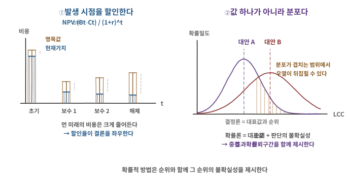
140-2-3-A01 NPV의 할인 구조(좌)와 확률적 LCC 결과분포의 중첩(우)
문항 4출처제140회 2교시 4번
신축이음장치 신축량 산정 및 프리세팅
다음과 같은 신축량 산정방법에 의해 신축이음장치를 결정하고 프리세팅량(Presetting, 사전조정)을 계산하고 프리세팅 방법에 대하여 설명하시오.
(단, 설치할 신축이음장치는 아래 표를 참고하며, 허용 신축량은 계산값의 가장 가까운 정수로 한다.)
신축량(Δℓ) = Δℓt + Δℓs + Δℓc + Δℓr + 여유량
여기서, Δℓt = 온도변화에 의한 이동량
Δℓs = 건조수축에 의한 이동량
Δℓc = 크리프에 의한 이동량
Δℓr = 활하중에 의한 보의 처짐으로 인한 이동량
[조건]
구분
조건
교량형식
Steel Box교
교량의 신축길이(L)
L = 120 m
주형의 높이(H)
H = 3.0 m
바닥 슬래브 타설 시 온도
0℃
신축이음 설치 시 온도
30℃
신축이음 설치 시기
슬래브 타설 후 24개월 경과
온도변화 조건
50℃ (−10℃ ~ +40℃)
강재의 선팽창계수(α)
α = 1.2×10⁻⁵/℃
건조수축, 크리프 저감계수(β)
β = 0.5
보의 처짐 이동량 계산 시
θ₁ = 1/150 (강교(연속교)) · h₁ = (2/3)·H
여유량
30 mm (±15 mm)
[신축이음장치 신축량]
신축이음장치 종류
신축량
NO. 80
80 mm
NO. 100
100 mm
NO. 120
120 mm
NO. 160
160 mm
NO. 200
200 mm
교량공학제140회 2교시계산형25점
모범답안
【핵심 키워드】 네 항 판별 = 구조형식이 가른다 / 크리프 = 지속 축압축력 없음 → 0 / 프리세팅 기준온도 = 설계온도 범위 중앙값 15℃ / 장치 = 요구량 이상의 최소 규격
Ⅰ. 서론 — 신축이음의 요구 신축량은 상부구조가 겪는 종방향 이동량의 합이다. 산정식은 주어져 있으나 네 항이 본 구조형식에서 실제로 발생하는지, 발생한다면 어떤 값을 쓰는지는 판단해야 한다. Steel Box교라는 조건이 크리프 항의 취급을 가르며, 프리세팅은 기준온도를 무엇으로 잡느냐에 따라 답이 두 배 이상 달라지므로 그 근거를 밝히는 것이 요구된다.
Ⅱ. 본론
신축량 산정
온도변화 Δℓt : Δℓt = α · L · ΔT = 1.2×10⁻⁵× 120,000 × 50 = 72.0 mm
설계온도 전 범위(−10℃ ~ +40℃)를 적용. 신축이음이 수용할 것은 설치 후 겪는 최대 이동 폭이다
「가장 가까운 정수」를 장치 선택에 적용하면 NO.120이 되나 요구 신축량을 만족하지 못한다. 이 조건은 계산값의 정수화를 뜻하는 것으로 해석한다
프리세팅량 산정
프리세팅은 설계도서의 기준 유간이 어느 온도를 전제로 하는지에서 출발한다. 설계온도 범위의 중앙값을 기준온도로 한다
Tm = (−10 + 40)/2 = 15℃
Δℓp = α · L · (Ti − Tm) = 1.2×10⁻⁵× 120,000 × (30 − 15) = 21.6 mm
설치 시 온도 30℃ > 기준온도 15℃ 이므로 거더는 기준 상태보다 팽창해 있다 → 기준 유간보다 21.6 mm 닫힌 상태로 설치
슬래브 타설 온도 0℃를 기준으로 삼으면 43.2 mm가 되나, 타설 온도는 건조수축·크리프의 시점 조건이지 신축이음 유간의 기준이 아니다
프리세팅 방법
① 설치 직전 강거더의 실제 온도 측정 → ② 기준온도와의 차로 프리세팅량 산정 → ③ 고정 지그·볼트를 풀어 유간 조정
④ 설치온도가 기준온도보다 높으면 유간을 줄이고, 낮으면 늘린다
⑤ 중심선·고저·횡단경사 확인 후 앵커를 철근에 고정 → ⑥ 최종 유간 재측정 후 무수축 콘크리트 타설·양생
순간 측정값은 일사·국부 가열에 좌우되므로 설치 직전 24시간 평균 온도를 설치온도로 쓰는 것이 안전하다
Ⅲ. 결론
항목
값
총 신축량
127.3 → 127 mm
신축이음장치
NO. 160
기준온도 Tm
15℃
프리세팅량
21.6 mm (유간 감소 방향)
여유량 선택이 장치 규격을 좌우한다. 여유량 30 mm(±15 mm)에서 하한 15 mm를 적용하면 총 신축량이 112.3 mm가 되어 NO.120이 선정된다. 어느 값을 왜 적용했는지 밝혀야 한다
장치 규격이 이산적(80/100/120/160/200)이므로 요구량이 경계 부근에 걸리면 가정값의 작은 차이가 규격 한 단계를 바꾼다. 본 문항이 127.3 mm로 120과 160 사이에 놓인 것은 그 감각을 묻는 설계로 보인다
프리세팅은 계산이 맞아도 기준온도가 어긋나면 현장에서 어긋난다. 설계도서가 어느 온도를 기준으로 유간을 표기했는지 확인이 선행되어야 한다
문항 5출처제140회 2교시 5번
곡선부재 구조물의 SFD · AFD · BMD 작도
그림과 같은 구조물을 해석하고 전단력도(SFD), 축력도(AFD), 모멘트도(BMD)를 작도하시오. (단위: kN, m)
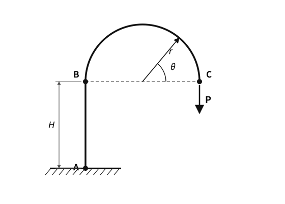
140-2-5-P01 구조도 — 반원 아치 캔틸레버
구조역학제140회 2교시계산형25점
모범답안
【핵심 키워드】 자유단이 있으므로 아치가 아니라 곡선 캔틸레버 / 수평반력 Ax = 0 / M = P ×수평거리 / AFD는 C 인장 → 정점 0 → B 압축으로 부호가 바뀐다 / 기둥 BMD는 직사각형
Ⅰ. 서론 — 본 구조는 A 고정, 기둥 AB, 반원 곡선부재 BC로 이루어지고 자유단 C에 연직하중 P가 작용한다. 곡선부재가 있으나 한쪽이 자유단이므로 아치로 거동하지 않는다. 3활절·2활절 아치처럼 수평 추력이 생기지 않으며, 본질적으로 끝단에 편심된 연직하중을 받는 외팔 구조다. 이 판별이 선행되지 않으면 반력부터 어긋난다.
곡선부재의 단면력은 부재축 방향이 위치마다 바뀌므로, 하중 P를 각 단면의 접선·법선 방향으로 분해해야 한다. 축력의 부호가 도중에 바뀌는 것이 이 문제의 요지다.
Ⅱ. 본론
구조 판별과 지점반력
반원의 중심을 원점으로 두고 θ = 0 을 C, θ = π 를 B 로 정의한다
지점은 A의 고정단 하나뿐이고 자유단 C가 있으므로 정정 구조다
외력은 연직 P 하나이고 수평 외력이 없다 → Ax = 0
ΣV = 0 : Ay = P (↑)
C는 A로부터 수평으로 2r 떨어져 있다 (B와 C가 지름의 양 끝) → M_A = 2Pr
H는 단면력 크기에 관여하지 않는다. M_A는 P의 작용선과 A의 수평거리로만 정해지며, H는 구조의 형상만 정의한다
곡선부재 BC의 단면력
임의 위치 θ에서 절단하고 C측 자유물체를 취한다. 단면 위치는 x = r cosθ, y = r sinθ
휨모멘트 : 단면에서 C까지의 수평거리가 r(1 − cosθ)이므로
M(θ) = P·r(1 − cosθ)
축력·전단력 : 연직하중 P를 접선·법선 방향으로 분해한다 (인장을 + 로 둔다)
N(θ) = P·cosθ, V(θ) = P·sinθ
0 ≤θ≤π 에서 sinθ≥ 0 이므로 V는 부호가 바뀌지 않는다. 반면 cosθ는 정점에서 부호가 바뀐다
위치
N (인장 +)
V
M
C (θ = 0)
+P 인장
0
0
정점 (θ = π/2)
0
P 최대
Pr
B (θ = π)
−P 압축
0
2Pr 최대
동일한 연직하중을 받는 하나의 부재에서 C측 인장 → 정점 0 → B측 압축으로 축력의 성격이 바뀐다. 직선부재에서는 나타나지 않는 현상이며 이 문항의 핵심이다
직선부재 AB
B에서 전달되는 연직력이 P이므로 N = −P (압축), 전 구간 일정
수평력이 없으므로 V = 0
B에서 전달되는 모멘트 2Pr이 작용하고 구간 내 횡하중이 없으므로 M = 2Pr 일정
따라서 기둥의 BMD는 삼각형이 아니라 직사각형이다. A의 반력 모멘트 2Pr과도 일치한다
단면력도 작도
AFD : B에서 −P → 정점 0 → C에서 +P. 부호 전환을 곡선 옆에 글자로 명시한다. 형상만으로는 읽는 사람이 한 번 해석해야 한다
SFD : B에서 0 → 정점 P → C에서 0. 한쪽 부호만 가지므로 한쪽으로만 그린다. 기둥 구간은 0
단경간 L=20 m의 프리스트레스트 콘크리트(PSC)보에서 아래 조건에 대한 다음 사항에 대하여 설명하시오.
[조 건]
구분
조건
단면
직사각형 b = 400 mm, h = 900 mm
긴장재
유효긴장력 Pe = 2,200 kN, 편심 e = 300 mm로 직선 배치
콘크리트 탄성계수
Ec = 28,000 MPa
콘크리트 단위중량
γc = 24 kN/m³
추가 작용하중
자중 외 (고정하중+활하중)의 합 ws = 15 kN/m
1) 프리스트레스에 의한 솟음량을 구하시오.
2) 자중에 의한 처짐을 구하시오.
3) 사용하중 상태에서의 처짐, 사용성(L/240)을 검토하시오.
콘크리트구조제140회 2교시계산형25점
모범답안
【핵심 키워드】 직선 배치 = 등가 모멘트 Mp = Pe·e 일정 / 솟음(↑)과 처짐(↓)의 대수합 / 자중은 별도 항 — 누락 시 판정이 뒤집힌다 / 사용성 = δ≤ L/240
Ⅰ. 서론 — PSC보의 처짐은 프리스트레스에 의한 상향 솟음과 하중에 의한 하향 처짐이 서로 상쇄된 결과다. 긴장재가 편심 e로 직선 배치되어 있으므로 등가 휨모멘트가 전 경간에서 일정하고, 솟음은 등분포하중 처짐과 다른 식을 쓴다. 본 문항은 조건이 완결적으로 주어져 외부 가정 없이 산정된다.
Ⅱ. 본론
단면 성질
A = b · h = 400 × 900 = 360,000 mm² (= 0.36 m²)
I = b·h³/12 = 400 × 900³/12 = 2.43×10¹⁰ mm⁴
EI = 28,000 × 2.43×10¹⁰ = 6.804×10¹⁴ N·mm²
단위는 N·mm로 통일한다. 1 kN/m = 1 N/mm 이므로 하중은 그대로 대입된다
프리스트레스에 의한 솟음량 δp
직선 배치이므로 편심이 일정하고, 등가 휨모멘트가 전 경간에서 일정하다
Mp = Pe · e = 2,200 × 0.3 = 660 kN·m = 6.60×10⁸ N·mm
자중의 취급이 판정을 가른다. 자중을 빠뜨리면 순 처짐이 상향 2.5 mm로 나와 결론 자체가 달라진다. 문제가 「자중 외」라고 명시한 것은 이를 구분하라는 뜻이다
직선 배치와 포물선 배치는 솟음 식이 다르다. 직선 배치는 등가 모멘트가 일정해 Mp·L²/(8EI), 포물선 배치는 등가 상향하중이 작용해 5wL⁴/(384EI) 형태가 된다. 배치 형식을 먼저 확인해야 한다
본 산정은 탄성·즉시 처짐이다. 실제 PSC 장기처짐 검토에서는 크리프·건조수축 및 프리스트레스 손실에 따른 시간의존 효과를 별도로 고려한다. 유효긴장력 Pe가 손실 후 값으로 주어졌으므로 본 문항에서는 손실 산정이 요구되지 않았다
문항 1출처제140회 3교시 1번
교량 경관 설계의 기본 개념과 경간분할 시 고려사항
교량 경관 설계의 기본 개념과 미적 관점에서 교량 경간분할 시 고려사항에 대하여 설명하시오.
교량공학제140회 3교시서술형25점
모범답안
【핵심 키워드】 경관은 덧붙이는 장식이 아니라 구조 형식과 비례에서 나온다 / 경간분할이 입면의 골격을 결정 / 비례·리듬·수평선·주변과의 관계 / 중앙경간을 강조하고 측경간을 종속시킨다 / 시점(視點)을 정해야 판단이 가능하다
Ⅰ. 서론 — 교량 경관 설계는 완성된 구조물에 색채나 조명을 덧붙이는 작업이 아니다. 교량의 인상은 구조 형식, 경간분할, 형고, 교각 형상이 만드는 비례에서 이미 결정되며, 이 골격이 정해진 뒤에 마감으로 바로잡을 수 있는 몫은 크지 않다. 그중에서도 경간분할은 입면의 리듬과 중심을 만드는 가장 상위의 결정이므로, 계획 초기에 구조·시공·경제성과 함께 다루어야 한다.
Ⅱ. 본론
경관 설계의 기본 개념
구조와 형태의 일치 : 힘의 흐름이 형태로 드러날 때 안정감이 생긴다. 구조적 역할이 없는 장식 부재는 오히려 인상을 흐린다
비례와 리듬 : 경간과 형고, 교각 높이와 경간, 상·하부의 무게감이 이루는 비례가 판단의 중심이다. 같은 요소의 반복이 리듬을 만든다
단순성과 통일성 : 한 교량 안에서 부재 형상과 재질을 통일하고, 불필요한 형식 변화를 피한다
주변 환경과의 관계 : 지형의 스카이라인, 하천·계곡의 폭, 배후 시가지의 스케일에 대응한다. 교량 단독의 아름다움이 아니라 놓이는 자리와의 관계가 대상이다
시점의 설정 : 원경·중경·근경, 보행자 시점과 차량 주행 시점에서 보이는 모습이 다르다. 어느 시점을 기준으로 판단할지 정하지 않으면 논의가 성립하지 않는다
스케일 : 보행자가 접근하는 교량과 고속으로 통과하는 교량은 요구되는 세부가 다르다. 난간·조명·교대 처리처럼 사람이 가까이서 보는 요소는 인간 척도로 다룬다
경관은 주관의 영역으로 보이지만, 시점과 비례라는 두 축을 고정하면 검토와 대안 비교가 가능한 설계 항목이 된다. 경관 심의가 요구하는 것도 이 근거다
미적 관점에서 경간분할 시 고려사항
경간의 리듬 : 등경간의 반복은 안정감을 주지만 길어지면 단조롭다. 경간을 변화시킬 때는 무작위가 아니라 일정한 규칙을 따른다
중심성의 확보 : 주요 조망축이나 지형적 중심이 명확한 경우에는 중앙경간을 강조하고 측경간을 그에 종속시키면 입면의 중심성과 질서를 확보하기 쉽다
중앙경간 최대는 절대 규칙이 아니라 중심성을 얻기 위한 대표적 구성 원리다. 비대칭 지형이나 접속부 조건에서는 다른 구성이 맞을 수 있다
형고와 경간의 비례 : 경간과 형고의 비례가 과도하게 무겁거나 가볍게 보이지 않도록 조정하고, 구조적 합리성을 유지하면서 상부구조의 수평선이 안정적으로 읽히도록 한다
형고가 낮을수록 좋은 것은 아니다. 경간이 긴데 형고가 지나치게 얕으면 힘의 흐름이 읽히지 않아 오히려 불안정해 보일 수 있다
교각 높이와 경간의 관계 : 높은 교각과 짧은 경간이 반복되면 입면이 과도하게 촘촘해 보일 수 있으므로, 교각 높이와 경간의 비례관계를 함께 검토한다
지형·하천과의 정합 : 가능하면 주요 수로나 계곡의 중심부에 교각이 놓이지 않도록 하고, 지형의 흐름과 경간분할이 조화되도록 계획한다
다만 하천 계획, 기초 조건, 수리 조건이 우선하는 경우가 많다. 미적 요구가 이들을 밀어낼 수는 없다
평면·종단선형과의 조화 : 곡선교는 관찰 시점에 따라 경간과 교각 간격이 왜곡되어 보일 수 있으므로 평면선형과 주시점에서의 투시 효과를 함께 검토한다. 종단 곡선과 상부 실루엣이 어긋나지 않게 한다
경간 수의 구성 : 대칭적 경간분할을 적용하는 경우에는 중앙에 경간을 두는 구성과 중앙에 교각을 두는 구성의 시각적 차이를 비교하여 중심성과 개방감을 검토한다
단부 처리 : 교대부에서 상부구조가 갑자기 끝나지 않도록 측경간 길이와 교대 형상을 조정한다. 측경간이 지나치게 짧으면 상부가 잘려 보인다
경간분할 결정 시 함께 검토할 사항
경관만으로 경간을 정할 수는 없다. 하부 지장물과 하천 계획, 항로·도로 이격, 기초 조건, 시공 방법, 공사비가 함께 결정 인자가 된다
미적 요구와 구조·경제성이 충돌하는 지점을 대안 비교로 드러내고 판단 근거를 남기는 것이 경관 설계의 실질이다
예컨대 중앙경간을 키우면 비례는 좋아지지만 형고가 커져 오히려 수평선이 두꺼워질 수 있다. 두 효과의 상충을 검토하지 않고 한쪽만 주장하면 근거가 되지 않는다
Ⅲ. 결론
구분
내용
기본 개념
구조와 형태의 일치 · 비례와 리듬 · 단순성 · 주변과의 관계 · 시점 설정
경간분할의 위치
입면의 골격을 정하는 가장 상위의 결정
미적 판단 축
중심성 확보 · 형고와 경간의 비례 · 교각 높이와 경간의 관계
한계
경관 단독으로 결정 불가 — 지장물·기초·시공·공사비와 함께 판단
경관은 마감이 아니라 계획 단계의 결정이다. 경간분할과 형고가 정해진 뒤에는 색채나 조명으로 바로잡을 수 있는 폭이 좁다. 형식 선정과 같은 단계에서 다뤄야 한다
미적 원칙은 절대 규칙이 아니라 판단의 축이다. 중앙경간 강조나 낮은 형고가 항상 옳은 것은 아니며, 지형과 시점에 따라 달라진다. 원칙을 수치 기준처럼 적용하면 오히려 자리에 맞지 않는 형태가 된다
판단 근거를 기록해야 검토가 가능하다. 어느 시점에서 무엇을 우선했는지, 어떤 대안을 왜 버렸는지가 남아 있어야 경관 심의와 이후 설계 변경에서 일관성을 지킬 수 있다
유지관리 상태가 경관을 좌우한다. 준공 시점의 형태가 아무리 정돈되어 있어도 오염, 백태, 도장 열화, 배수 자국이 누적되면 인상이 무너진다. 배수 계획과 마감 재료의 내후성을 경관 검토에 포함해야 한다
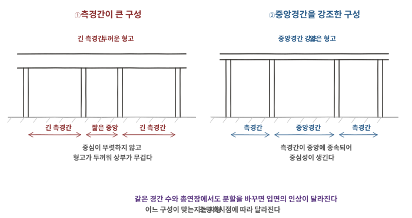
140-3-1-A01 같은 경간 수에서 분할을 달리한 두 구성의 입면 비교
문항 2출처제140회 3교시 2번
구조해석에서 머신러닝의 역할과 적용
구조해석에서 머신러닝(Machine Learning)의 역할과 적용에 대하여 설명하시오.
토목구조 일반제140회 3교시서술형25점
모범답안
【핵심 키워드】 머신러닝은 구조해석 절차의 특정 지점에 끼어든다 / 놓이는 자리가 다르면 필요한 데이터도 검증 방법도 다르다 / 입력 추정 · 반복해석 가속 · 결과 판정 · 역해석 · 설계 최적화 / 외삽에 취약하고 설명성이 낮다 / 검증 기준은 물리법칙 · 검증된 해석 · 실험 및 실측
Ⅰ. 서론 — 구조해석에서 머신러닝을 논할 때 가장 먼저 정해야 할 것은 그것이 해석의 어디에 놓이는가이다. 하중이나 물성을 추정하는 입력 단계인지, 반복 해석을 가속하는 대리모델인지, 결과를 판정하는 출력 단계인지, 계측값에서 모델 매개변수를 거꾸로 찾는 역해석인지, 설계변수를 갱신하는 최적화 폐루프인지에 따라 요구되는 데이터와 검증 방법이 전혀 달라진다. 이 구분 없이 「머신러닝을 적용한다」고만 하면 무엇을 어떻게 검증할지가 정해지지 않는다.
Ⅱ. 본론
역할 — 놓이는 자리에 따른 구분
① 입력 추정 — 계측 자료의 결측·이상치 처리, 재료 물성이나 지반 정수의 추정, 교통하중 특성의 통계적 모형화에 쓰인다
해석 자체는 물리 기반 모델로 수행하되, 계측·시험자료를 이용해 입력값의 추정 정확도를 높이거나 불확실성을 정량화한다. 불확실성 자체가 없어지는 것은 아니다
② 반복해석 가속 — 대리모델(surrogate model) : 검증된 해석모델의 입력·출력 관계를 학습하여 정해진 적용범위 안에서 반복 해석을 대리한다. 물리 해석을 영구히 폐기하는 것이 아니라 그 호출 횟수를 줄이는 것이다
신뢰성 해석의 몬테카를로 시뮬레이션, 형상·단면 최적화, 매개변수 민감도 분석처럼 같은 해석을 수천 번 반복해야 하는 경우에 실익이 크다. 단발성 해석에는 학습 비용이 더 든다
③ 결과 판정·이상탐지 — 계측 신호로부터 손상 위치와 정도를 판정하는 구조건전성 모니터링, 해석 결과 데이터의 이상 감지
④ 역해석과 모델 업데이트(Model Updating) — 실측 고유진동수나 변위로부터 강성·경계조건 같은 모델 매개변수를 역추정하여 해석 모델을 실제 구조에 맞춘다
⑤ 설계 최적화 — 설계변수 → 해석 또는 대리모델 → 목적함수 평가 → 새 설계변수로 이어지는 반복 폐루프다. 결과를 쓰는 것이 아니라 입력을 갱신한다는 점에서 ③과 성격이 다르다
적용 형태
적용
학습 데이터
얻는 것
대리모델
해석 결과 (입력–출력 쌍)
반복 해석 시간 단축
역해석·모델 보정
실측 응답 (진동·변위)
실구조에 맞춘 해석 모델
손상 탐지
건전 상태와 손상 상태의 계측 신호
손상 위치·정도의 판정
설계 최적화
해석 결과와 목적함수 값
단면·형상 대안의 탐색
하중·물성 추정
현장 계측·시험 자료
입력값의 통계적 특성
최근에는 지배방정식·평형조건·경계조건을 학습 과정에 반영하여 데이터가 부족한 경우에도 물리적 일관성을 확보하려는 물리 정보 기반 학습이 연구·적용되고 있다
한계와 유의사항
외삽에 취약하다. 학습 범위를 벗어난 입력에서는 예측이 급격히 나빠지면서도 값은 그럴듯하게 나온다. 극한하중이나 손상 상태처럼 데이터가 희소한 영역이 정작 설계에서 중요한 영역이라는 점이 근본 문제다
설명성과 추적성이 낮다. 복잡한 모델은 예측 근거의 해석이 어려워 설계 의사결정의 설명성과 추적성이 떨어질 수 있다
데이터의 양과 품질이 결과를 지배한다. 해석 결과로 학습한 대리모델은 원 해석 모델의 오류를 그대로 물려받는다. 학습이 잘 됐다는 것이 옳다는 뜻이 아니다
과적합의 위험이 있다. 학습 데이터에는 잘 맞지만 새로운 입력에서 성능이 떨어지는 경우가 있으므로, 학습에 쓰지 않은 자료로 성능을 확인해야 한다
검증 체계가 필요하다. 학습·검증·시험 데이터를 분리하고, 검증 기준을 물리법칙·검증된 해석·실험 및 실측에 둔다
학습 데이터의 하중·재료·형상 범위를 명시하고, 그 범위를 벗어난 입력에서는 물리 해석으로 전환하는 규칙을 함께 정한다
예측 불확실성을 함께 낸다. 평균값만 쓰지 않고 예측구간이나 모델 불확실성을 함께 평가해야 설계 판단에 쓸 수 있다
요컨대 판단의 기준은 물리법칙과 검증된 해석, 그리고 실험·실측에 둔다. 머신러닝은 그 기준을 더 빨리 또는 더 넓게 쓰게 해주는 도구다
Ⅲ. 결론
구분
내용
역할
입력 추정 · 반복해석 가속 · 결과 판정 · 역해석 · 설계 최적화
실익이 큰 경우
같은 해석을 반복해야 하는 신뢰성 해석 · 최적화 · 민감도 분석
주요 한계
외삽 취약 · 설명 가능성 부족 · 데이터 품질 의존
검증 기준
물리법칙 · 검증된 해석 · 실험 및 실측
어디에 놓을 것인지를 먼저 정해야 한다. 자리가 정해져야 필요한 데이터와 검증 방법이 따라 나온다. 「구조해석에 머신러닝을 도입한다」는 문장만으로는 아무것도 결정되지 않는다
데이터가 희소한 영역이 설계상 중요한 영역과 겹친다. 극한하중과 손상 상태가 그렇다. 학습 모델의 적용 범위를 명시하고, 그 밖에서는 물리 기반 해석으로 돌아가는 규칙을 함께 세워야 한다
검증 절차를 설계 성과품에 남겨야 한다. 학습 데이터의 출처와 범위, 검증 결과, 적용 한계가 기록되지 않으면 이후 검토나 재해석이 불가능하다. 이것이 도구의 문제가 아니라 설계 관리의 문제인 이유다
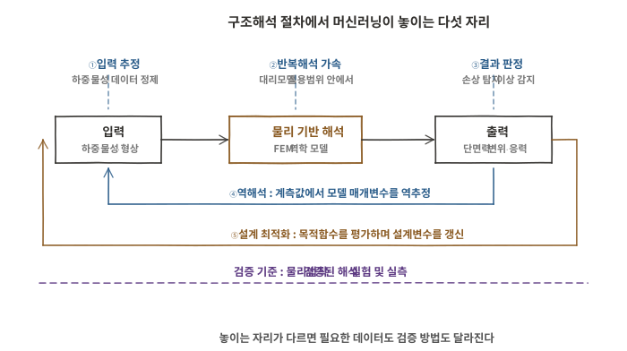
140-3-2-A01 구조해석 절차에서 머신러닝이 놓이는 자리
문항 3출처제140회 3교시 3번
PSC 텐던의 부식 모니터링과 단계별 부식 제어 방안
프리스트레스트 콘크리트(PSC)의 텐던(Tendon)에 대한 다음 사항에 대하여 설명하시오.
1) 부식 모니터링 방법
2) 부착식과 비부착식으로 구분하여 설계, 재료, 시공, 유지관리 등의 단계별 부식 제어 방안
콘크리트구조제140회 3교시서술형25점
모범답안
【핵심 키워드】 진단 대상은 강연선 자체의 건전성과 방식체계의 연속성 둘 다 / 작은 단면손실도 파단 위험으로 이어진다 / 부착식은 공극·자유수, 비부착식은 피복·정착부 밀봉이 관건 / 기법마다 보는 대상과 적용 한계가 다르다 / 제어는 설계 단계에서 결정된다
Ⅰ. 서론 — PSC 텐던의 부식은 철근콘크리트의 부식과 성격이 다르다. 고응력의 고강도 강재이므로 국부부식이나 피팅이 생기면 작은 단면손실도 파단 위험으로 이어질 수 있고, 환경에 따라 응력부식균열이나 수소취화가 문제될 수 있다. 게다가 콘크리트 내부에 있어 균열이나 녹물 같은 외부 징후가 거의 나타나지 않는다. 따라서 진단은 강연선 자체의 손상과 이를 둘러싼 방식체계의 건전성을 두 축으로 함께 보아야 하며, 제어는 시공이나 유지관리가 아니라 설계 단계에서 대부분 결정된다.
Ⅱ. 본론
부식 모니터링 방법
비파괴 탐사 : 기법마다 보는 대상이 다르므로 목적에 맞춰 조합한다
충격응답법·초음파·전자기파 계열 → 그라우트 충전 상태와 덕트 내부 이상
방사선 투과 → 공극과 강연선 배치·이상 확인
자기변형·누설자속 계열 → 강연선의 단면손실과 파단
부식 자체를 직접 재는 것이 아니라, 방식 결함과 강연선 손상을 서로 다른 기술로 나눠 본다. 이 구분이 있어야 조합이 설계된다
음향방출(AE) 모니터링 : 소선이 파단할 때 방출되는 탄성파를 상시 계측해 파단 발생 시점과 위치를 잡는다. 진행 중인 손상 이벤트를 실시간으로 포착할 수 있는 몇 안 되는 수단이다
전기화학적 방법 : 자연전위·분극·전기저항의 변화로 부식 개시와 진행 경향을 본다
다만 PSC 텐던은 접근성과 전기적 경로의 제약으로 일반 철근보다 적용이 어렵다. 설계 단계에서 기준전극·센서를 매립하거나 전기적 절연 시스템을 마련한 경우에 활용성이 높아진다
환경·상태 지표 계측 : 염화물 침투량, 콘크리트 저항, 습도와 온도를 계측해 부식이 일어날 조건이 갖추어졌는지를 본다
소선 파단이 누적되면 유효긴장력이 줄어 거동으로 드러난다. 다만 드러났을 때는 이미 상당히 진행된 상태다
어느 하나로 확정되지 않는다. 직접 지표와 간접 지표를 겹쳐 판단하고, 의심 구간은 국부 개방으로 확인하는 단계적 절차를 세워야 한다
부착식과 비부착식의 차이
부착식 : 콘크리트 → 덕트(쉬스) → 그라우트 → 강연선의 순서로 방벽이 놓인다. 덕트가 1차 방벽이고 그라우트는 2차 방벽이자 부착 매개이며, 그라우트의 고알칼리 환경이 강연선을 부동태화한다
충전 불량이나 블리딩으로 생긴 공극과 자유수가 취약부가 된다
비부착식 : 강연선이 그리스나 왁스 같은 방청재와 피복·덕트로 보호되며, 시스템 형식에 따라 구성이 달라진다. 단일강연선형은 공장에서 피복과 방청재가 연속적으로 형성된다
부착식은 그라우트가 강연선을 구조체에 부착시키므로 손상 후 재긴장과 교체가 어렵고, 공극이나 자유수가 있으면 국부 또는 연속적인 부식이 발생할 수 있다
비부착식은 교체 가능한 상세를 적용한 경우에 한해 텐던을 교체할 수 있으며, 피복·덕트와 정착부의 방수·밀봉 성능이 관건이다. 우열이 아니라 손상 메커니즘과 유지관리 전략이 다르다
단계별 부식 제어 방안
단계
부착식
비부착식
설계
배수·방수 계획, 최고점 배기구와 최저점 배수구, 점검 가능한 정착부 배치
피복 연속성 확보 배치, 정착부 밀봉 상세, 교체 가능한 배치와 여유 덕트
재료
저블리딩·고성능 프리패키지 그라우트, 저염화물 재료, 내식성 덕트(금속 또는 플라스틱)
HDPE 피복 두께와 품질, 방청 그리스 충전율, 이중 방식(에폭시 도장 강연선 등)
시공
적정 주입압·연속 주입·배기 확인, 필요 시 진공 보조, 배합·주입 기록, 정착부 캡 충전과 밀봉
피복 손상 방지 취급, 정착부 밀봉 검사, 단부 캡 그리스 충전
유지관리
충전 상태 비파괴 조사, 배수구 통수 확인, 정착부 개방 점검
피복·밀봉 상태 점검, 그리스 유출 확인, 필요 시 텐던 교체
두 방식 모두 정착부, 곡률 최고점과 최저점, 배기·배수부처럼 물이나 공극이 모이기 쉬운 위치가 취약부다. 배수와 밀봉이 부식 제어의 실질적인 중심이 된다
부착식에서는 블리딩수와 그라우트 공극이 정착부와 곡률 최고점에 모여 문제를 일으킨 사례가 반복 보고되었다. 최저점만 보아서는 안 된다
다중 방벽 개념으로 보면 콘크리트 피복, 덕트 또는 피복, 충전재, 강재 자체의 내식성이 층을 이룬다. 한 층에만 의존하지 않도록 구성하는 것이 설계 단계의 요구다
Ⅲ. 결론
구분
내용
부식의 성격
작은 단면손실도 파단 위험 — 외부 징후가 늦다
모니터링
비파괴 탐사 · 음향방출 · 전기화학 · 환경 지표 · 구조응답 간접 감시
부착식 관건
공극과 자유수 — 충전 관리, 배기·배수 상세, 재긴장·교체 곤란
비부착식 관건
피복·덕트와 정착부 밀봉 — 교체 가능한 상세를 적용할 수 있음
제어의 중심
설계 단계의 배수·밀봉·다중 방벽 구성
외부 징후가 늦게 나타날 수 있어 조기 탐지가 어렵다. 단면 손실이 작아도 파단에 이를 수 있으므로, 사후 점검보다 방벽이 끊기지 않게 만드는 설계와 시공에 무게가 실린다
모니터링 결과를 단독으로 판정 근거로 쓰지 않아야 한다. 비파괴 탐사는 공극의 유무를 알려주지만 그 공극에서 부식이 진행 중인지는 말해주지 않는다. 여러 지표를 겹쳐 보고 필요하면 국부 개방으로 확인하는 절차를 미리 정해두어야 한다
두 방식의 선택은 우열이 아니라 손상 메커니즘과 유지관리 전략의 선택이다. 부착식은 그라우트 결함의 확인과 사후 교체가 어렵고, 비부착식은 피복·밀봉 건전성이 핵심이며 교체 가능한 상세를 적용할 수 있다. 점검 접근성과 교체 시나리오까지 포함해 설계 초기에 판단해야 한다
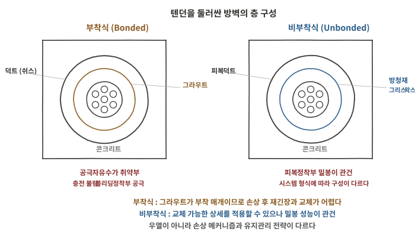
140-3-3-A01 부착식과 비부착식 텐던의 방벽 구성 비교
문항 4출처제140회 3교시 4번
2경간 연속보의 지점반력과 B점 모멘트
그림과 같이 3개 지점으로 지지된 2경간 연속보의 모든 지점반력 및 B지점의 모멘트 M_B를 구하시오.
[조 건]
AB구간 : 길이 L₁ = 6 m, 단면강성 EI, 등분포하중 W₁ = 20 kN/m
BC구간 : 길이 L₂ = 6 m, 단면강성 2EI
B점에서 0 kN/m, C점에서 W₀ = 20 kN/m로 선형 증가하는 삼각형 분포하중 작용
C점에는 집중모멘트 M₀ = 30 kN·m가 후킹(부모멘트)을 유발하는 방향으로 작용
매트릭스 구조 해석법을 제외한 기타 구조 해석법을 이용
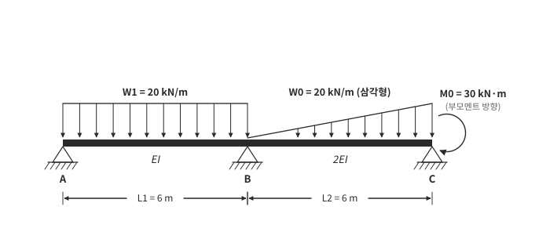
140-3-4-P01 2경간 연속보 하중도 (문제 도면 재작도)
구조역학제140회 3교시계산형25점
모범답안
【핵심 키워드】 부정정차수 1차 → 부정정력으로 M_B 선택 / 매트릭스 제외 조건 → 삼연모멘트법 / 단부 M_C는 미지수가 아니라 평형상 확정(−30) / 삼각형 하중은 모멘트도가 비대칭 → 도심을 오른쪽 지점 C에서 잰다 / 강성이 다르므로 L/I로 나눠 넣는다
Ⅰ. 서론 — 지점이 셋인 단순 지지 연속보이므로 부정정차수는 1차이며, 부정정력으로 B점 휨모멘트를 선택하면 삼연모멘트법으로 한 식에 정리된다. 이 문항에서 판단이 필요한 곳은 두 군데다. C점 집중모멘트는 미지의 반력이 아니라 그 지점의 휨모멘트를 확정하는 외력이라는 점, 그리고 BC경간의 모멘트도가 비대칭이어서 도심을 어느 단에서 재는가에 따라 값이 달라진다는 점이다.
집중모멘트를 빠뜨리면 30 kN·m가 남는다. 이 잔차가 0으로 닫히는지가 M_C의 부호를 옳게 잡았는지 확인하는 가장 빠른 방법이다
독립 검증 : 산정된 반력과 단부모멘트로 전체 연직력과 모멘트 평형이 동시에 만족되므로, 삼연모멘트식의 해가 옳게 구해졌음이 확인된다
Ⅲ. 결론
항목
값
B점 모멘트 M_B
−69.0 kN·m (부모멘트)
지점반력
R_A = 48.5 kN, R_B = 98.0 kN, R_C = 33.5 kN
검산
연직력·모멘트 평형 모두 일치, 회전각 연속 조건 확인
C점 집중모멘트의 취급이 답을 가른다. 부모멘트 방향이라는 조건은 M_C = −30 kN·m를 뜻한다. 부호를 반대로 잡으면 M_B = −79 kN·m가 되어 반력이 모두 달라진다
비대칭 모멘트도의 도심 기준단과 경간별 강성 차이를 함께 반영해야 한다. C에서 2.8 m 대신 B에서 3.2 m를 넣으면 M_B = −71 kN·m가 되고, BC의 2EI를 빠뜨리면 좌변과 우변이 동시에 틀린다. 삼연모멘트식을 EI 일정 형태로 외워 쓰면 둘 다 걸린다
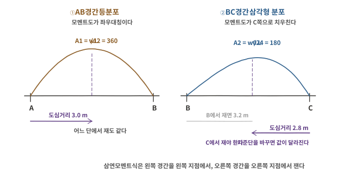
140-3-4-A01 삼연모멘트법에서 면적과 도심을 재는 기준단
문항 5출처제140회 3교시 5번
충전형 원형강관 합성기둥의 설계압축강도
그림과 같은 충전형 원형강관 합성기둥의 설계압축강도를 구하시오. (단, KDS 14 31 80 합성구조 부재 설계기준(하중저항계수설계법) 적용)
[조 건]
구분
조건
강관 단면적
A_s = 18,400 mm²
강관 단면2차모멘트
I_s = 548×10⁶ mm⁴
강재의 항복강도
f_y = 315 N/mm²
강재의 탄성계수
E_s = 205,000 N/mm²
콘크리트의 설계기준강도
f_ck = 27 N/mm²
콘크리트의 탄성계수
E_c = 26,700 N/mm²
기둥의 유효 좌굴길이
kl = 5.0 m
유효강성 계수
C₂ = 0.85(1 + 1.56 · f_y·t / (D_c·f_ck))
C₃ = 0.6 + 2(A_s / (A_c + A_s)) ≤ 0.9
압축에 대한 강도저항계수
φ_c = 0.75
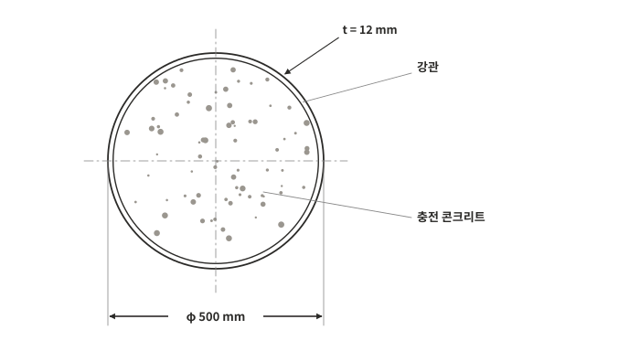
140-3-5-P01 충전형 원형강관 합성기둥 단면 (문제 도면 재작도)
강구조제140회 3교시계산형25점
모범답안
【핵심 키워드】 콘크리트 면적은 코어 직경 D_c = D − 2t 기준 / C2는 P_no의 콘크리트 항, C3는 (EI)_eff의 계수 — 적용 위치가 다르다 / P_no/P_e = 0.18 ≤ 2.25 → 비탄성 영역의 기둥강도식 / 마지막에 φ_c = 0.75를 곱한다
Ⅰ. 서론 — 충전형 합성기둥의 설계압축강도는 단면이 낼 수 있는 압축강도 P_no를 먼저 구하고, 합성단면의 유효강성으로 탄성좌굴하중 P_e를 구한 뒤, 두 값의 비로 기둥강도곡선에서 공칭강도 P_n을 정하고 마지막에 강도저항계수를 곱하는 순서로 얻는다. 문제는 C2·C3와 φ_c만 주었으므로 나머지 산정식은 설계기준에서 가져온다. 따라서 문제 조건으로 직접 산정되는 부분과 기준에서 인용한 식을 구분해 밝히는 것이 이 문항의 요구다.
Ⅱ. 본론
콘크리트 코어의 단면 성질
콘크리트는 강관 안쪽에만 채워지므로 코어 직경으로 산정한다
D_c = D − 2t = 500 − 2(12) = 476 mm
A_c = πD_c²/4 = π(476)²/4 = 177,952 mm²
I_c = πD_c⁴/64 = 2.520×10⁹ mm⁴
외경 500을 그대로 쓰면 A_c가 약 10% 커지고 P_no가 과대평가된다. 강관 단면적 A_s가 별도로 주어진 것도 두 재료를 겹치지 않게 세라는 뜻이다
0.180은 경계값 2.25에서 크게 떨어져 있다. P_n/P_no ≈0.93으로, 이 문제에서 기둥강도곡선에 따른 압축강도 저감은 약 7%다
단계
값
A_c / I_c
177,952 mm² / 2.520×10⁹ mm⁴
C2 / C3
1.240 / 0.787
P_no
11,754 kN
(EI)_eff
1.6532×10¹⁴ N·mm²
P_e
65,266 kN
P_n
10,900 kN
φ_c·P_n
8,175 kN
Ⅲ. 결론
항목
값
설계압축강도 φ_c·P_n
8,175 kN (약 8.18 MN)
적용 강도곡선
비탄성 영역 (P_no/P_e = 0.180 ≤ 2.25)
근거 구분
조건 산정 : A_c, I_c, C2, C3 / 기준 인용 : P_no, (EI)_eff, 기둥강도곡선
콘크리트 면적을 코어 기준으로 잡는 것이 첫 관문이다. 외경으로 계산하면 P_no가 과대평가되고, 이후 모든 값이 함께 어긋난다
C2와 C3의 적용 위치를 혼동하지 않아야 한다. C2는 단면 압축강도에, C3는 유효강성에 들어간다. 두 계수 모두 콘크리트 항에 곱해지므로 바꿔 넣어도 계산은 진행되지만 P_no와 P_e가 동시에 틀린다
문제가 준 식과 기준에서 가져온 식을 구분해 밝혀야 한다. 이 문항은 C2·C3·φ_c만 주었으므로 P_no, 유효강성, 기둥강도곡선은 설계기준을 인용한 것이다. 인용 사실을 적지 않으면 어디까지가 조건이고 어디부터가 판단인지 드러나지 않는다
문항 6출처제140회 3교시 6번
중앙 게르버 힌지 설치에 따른 구조계 변화와 부재 단부 모멘트
양단고정보의 중앙점에 게르버 힌지를 설치할 경우에 변화되는 구조계의 역학적 특성에 대하여 설명하고, 그림과 같이 공항승객용 터미널을 연결하는 양단고정보 AB의 중앙점 C점에 게르버 힌지를 설치할 경우에 발생하는 부재 단부 모멘트 M_AC, M_BC를 매트릭스 구조 해석법을 제외한 기타 구조해석법을 이용하여 구하시오. (단, 휨강성 EI는 전 지간에 걸쳐 일정)
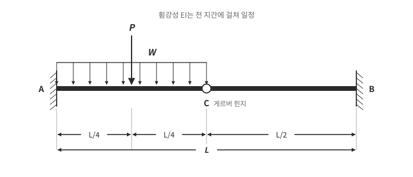
140-3-6-P01 양단고정보 중앙에 게르버 힌지를 설치한 구조 (문제 도면 재작도)
구조역학제140회 3교시계산형25점
모범답안
【핵심 키워드】 힌지는 모멘트를 전달하지 않고 전단은 전달한다 / M_C = 0으로 부정정차수 1 감소 / C점 변위 적합조건으로 전달전단력 Q를 구한다 / 본 하중조건에서는 단부 부모멘트가 오히려 증가 / 증가량이 양단에서 같다
Ⅰ. 서론 — 중앙에 게르버 힌지를 두면 그 점의 휨모멘트가 0으로 강제되어 구조계의 구속도가 낮아진다. 그러나 구속도가 낮아진다고 단부 응력이 줄어드는 것은 아니다. 중앙에서 받지 못하게 된 모멘트가 어디로 가는지가 함께 답해져야 한다. 해법은 힌지 좌우를 각각 캔틸레버로 보고 C점의 처짐이 같다는 변위 적합조건으로 전달전단력을 구하는 순서를 따른다.
Ⅱ. 본론
게르버 힌지 설치에 따른 구조계의 변화
전달 성분 : 힌지는 휨모멘트를 전달하지 않고 전단력과 축력만 전달한다. 따라서 M_C = 0이 조건으로 추가된다
M_BC : CB는 자유단 C에 하향 Q를 받는 길이 L/2의 캔틸레버이므로 M_BC = −Q·(L/2)
M_BC = −(3WL² + 5PL)/64 (고정단 부모멘트)
검산
연직력 : V_A = W·L/2 + P − Q, V_B = Q 이므로 합이 W·L/2 + P가 되어 전 하중과 일치
힌지 조건 : CB 자유물체에서 C점 모멘트를 취하면 M_C = 0이 그대로 만족된다
수치 대입 검증 : L = 8 m, W = 10 kN/m, P = 40 kN을 넣으면 Q = 13.75 kN, |M_AC| = 105.0 kN·m, |M_BC| = 55.0 kN·m를 얻는다. 같은 조건의 양단고정보 값 81.67과 31.67에 대해 증가량이 양단 모두 23.33 kN·m로 일치한다
항목
결과
전달전단력 Q
(3WL + 5P)/32
M_AC
−(5WL² + 11PL)/64
M_BC
−(3WL² + 5PL)/64
양단 증가량 Δ
M
WL²/48 + PL/32 (양단 동일)
Ⅲ. 결론
구분
내용
구조계 변화
M_C = 0 → 부정정차수 2차에서 1차로 감소, 휨 유연성 증가
모멘트 재분배
중앙에서 받지 못한 모멘트가 양 고정단으로 이동
단부 모멘트
M_AC = −(5WL²+11PL)/64, M_BC = −(3WL²+5PL)/64
적용 범위
증가 현상과 증가량 동일은 본 하중조건에 한정
부정정차수 감소가 단부 응력 감소를 뜻하지 않는다. 본 문제의 비대칭 하중조건에서는 구속도가 낮아졌는데도 양 고정단의 부모멘트가 커진다. 힌지를 「응력을 덜어주는 장치」로 이해하면 설계가 위험해진다
일반명제로 확장하지 않아야 한다. 하중배치와 힌지 위치에 따라 단부 모멘트가 줄어드는 경우도 있다. 이 문항의 결과는 중앙 힌지와 이 하중배치에서 나온 것이며, 설계에서는 대상 구조에 대해 직접 비교해야 한다
힌지 설치의 효과는 회전구속의 해제에 있다. 부등침하 등 강제변형에 의한 휨 부정정력을 완화하는 것이 이점이며, 그 대가로 단부 보강과 여유 감소를 감수한다
축방향 온도신축은 별도의 상세가 필요하다. 게르버 힌지는 축력을 전달하므로 신축을 수용하지 못한다. 이동 가능한 지점이나 신축이음이 함께 계획되어야 하며, 회전힌지 하나로 갈음할 수 없다
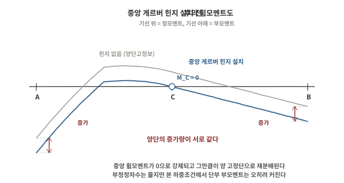
140-3-6-A01 중앙 게르버 힌지 설치 전후의 휨모멘트도 비교
문항 1출처제140회 4교시 1번
성능기반설계법(PBD)
성능기반설계법(Performance-Based Design, PBD)에 대하여 설명하시오.
토목구조 일반제140회 4교시서술형25점
모범답안
【핵심 키워드】 시방기준설계가 방법을 규정한다면 성능기반설계는 도달할 성능을 규정한다 / 성능목표는 요구 성능수준과 작용수준의 조합 / 목표는 정량 지표로 표현되어야 검증된다 / 평가수단은 목표에 맞춰 고른다 — 비선형 해석이 전제는 아니다 / 자유도가 커지는 만큼 입증 책임도 커진다
Ⅰ. 서론 — 시방기준설계는 재료·치수·상세를 규정하고 그것을 지키면 안전하다고 본다. 성능기반설계는 구조물이 도달해야 할 성능을 먼저 정의하고 그 달성 여부를 해석이나 실험으로 입증한다. 규정 준수에서 성능 입증으로 축이 옮겨가는 것이며, 그 결과 설계자의 자유도가 커지는 동시에 검증 부담과 입증 책임이 함께 커진다. 신형식이나 비정형 구조처럼 기존 시방규정을 그대로 적용하기 어려운 대상, 그리고 기존 시설물의 성능평가에서 이 방법이 요구되는 이유가 여기에 있다.
Ⅱ. 본론
개념과 시방기준설계와의 차이
구분
시방기준설계
성능기반설계
규정 대상
방법 — 재료·치수·상세
결과 — 도달할 성능
설계 자유도
규정 범위 안
목표를 만족하면 자유
신형식·비정형
적용이 어렵다
적용할 수 있다
검증
기준 충족 여부 확인
해석·실험으로 성능 입증
책임
기준을 지켰는가
성능을 입증했는가
두 방법은 대립하지 않는다. 현행 설계기준도 대부분 시방규정을 기본으로 두고 특정 검토에 성능 개념을 도입한 혼합 형태이며, 성능기반설계가 시방기준을 대체한다고 보기는 어렵다
성능목표의 설정
성능목표는 요구 성능수준과 작용수준의 조합으로 정의한다. 시설물의 중요도가 높을수록 같은 작용수준에서 더 높은 성능을 요구하므로 목표가 상향된다
요구 성능수준 : 구조물이 유지해야 할 상태를 단계로 정의한다
작용수준 : 지진·풍·충돌·사용하중 등 검토 대상 작용의 크기와 발생 수준을 정의한다. 지진처럼 확률적 위험도로 표현되는 작용은 재현주기나 초과확률로 수준을 설정할 수 있다
재현주기는 확률적 자연재해에 쓰는 한 가지 표현 방식이며, 모든 작용이 이 형태로 정의되는 것은 아니다
내진설계를 예로 들면 기능수행, 즉시복구, 인명보호, 붕괴방지 같은 성능수준을 쓸 수 있으며, 이 순서로 허용되는 손상과 변형이 커진다
목표는 정량 지표로 표현되어야 검증이 가능하다. 부재 회전각, 변형률, 잔류변위, 손상수준 같은 값으로 놓지 않으면 「인명보호」라는 말만으로는 만족 여부를 판정할 수 없다
수행 절차
① 성능목표 설정 : 시설물 중요도와 발주자 요구를 반영해 요구 성능수준·작용수준의 조합과 정량 수용기준을 먼저 확정한다
② 작용수준 정의 : 대상 작용의 크기와 발생 수준을 정의한다. 지진 등 확률적 자연재해는 필요에 따라 재현주기·초과확률과 부지 고유 자료를 사용한다
③ 예비설계 : 시방규정이나 경험식으로 초기 단면과 상세를 정한다
④ 평가모델 구축 : 요구 성능과 비선형성의 정도에 맞는 평가방법을 선정하고, 재료·기하·경계조건을 모델링한다
⑤ 성능지표 산정 : 선형 또는 비선형 해석, 시간이력해석, 실험 등 목표에 맞는 수단으로 성능지표를 구한다
⑥ 수용기준과 대조 : 산정된 응답을 ①의 정량 기준과 비교해 만족 여부를 판정한다
⑦ 미달 시 설계 수정과 반복 : 단면·상세·시스템을 바꾸어 ③부터 되풀이한다
⑧ 문서화와 독립 검증 : 모델 가정, 지반운동 선정, 수용기준의 출처, 판정 결과를 기록하고 제3자 검토를 받는다
⑧이 형식적 절차가 아니다. 해석 가정이 결과를 좌우하므로, 가정이 기록되지 않으면 검증 자체가 성립하지 않는다
평가수단과 수용기준
평가수단은 목표 성능과 대상 구조에 따라 고른다. 탄성 범위에서 판정되는 목표는 선형해석으로 충분하고, 소성 거동을 허용하는 목표라야 비선형 해석이 필요해진다. 경우에 따라 실험이나 확률적 평가를 쓴다
비선형 정적해석(Pushover) : 하중을 점증시켜 항복 순서와 소성힌지 형성, 전체 거동을 파악한다. 계산이 가볍고 거동 이해에 유리하나 고차모드 영향을 담기 어렵다
비선형 시간이력해석 : 지반운동 기록을 직접 입력해 시간에 따른 응답을 구한다. 가장 상세하나 지반운동 선정·조정과 재료 이력모델에 결과가 민감하다
수용기준 : 실험 자료와 기존 연구를 근거로 정해진다. 값 자체에 불확실성이 있으므로 출처와 적용 범위를 함께 밝혀야 한다
해석 정밀도를 올린다고 판정의 신뢰도가 그만큼 올라가지는 않는다. 입력 하중과 수용기준의 불확실성이 결과 불확실성을 지배하는 경우가 많다
적용 대상과 한계
적용 : 장대교량과 특수구조, 기존 시설물의 내진성능평가와 보강 설계, 시방규정으로 다루기 어려운 신형식, 발주자가 통상보다 높은 성능을 요구하는 경우
한계 : 해석 결과가 모델 가정에 민감하고, 수용기준의 근거가 충분하지 않은 영역이 있으며, 검증에 비용과 시간이 든다. 검토자의 역량과 인허가 체계가 뒷받침되지 않으면 설계자의 판단을 확인하기 어렵다
Ⅲ. 결론
구분
내용
개념
규정 준수에서 성능 입증으로 설계의 축이 이동
성능목표
요구 성능수준과 작용수준의 조합 · 정량 지표로 표현
절차
목표 설정 → 해석 → 수용기준 대조 → 미달 시 반복 → 문서화·검증
평가수단
목표 성능에 맞는 구조해석 · 실험 · 검증 (비선형 해석이 전제는 아님)
한계
모델 가정 민감 · 수용기준 근거 · 검증 비용과 체계
정량화되지 않은 성능목표는 목표로 기능하지 못한다. 「인명을 보호한다」는 문장만 으로는 해석 결과와 대조할 수 없다. 어떤 지표를 얼마로 둘 것인지가 정해져야 설계가 시작된다
자유도와 책임은 같이 온다. 시방규정을 벗어난 설계가 가능해지는 만큼 그 타당성을 입증할 책임이 설계자에게 옮겨온다. 가정과 근거의 문서화, 독립 검증이 방법의 일부이지 부수 절차가 아닌 이유다
해석의 정밀도만 높인다고 신뢰도가 오르지 않는다. 입력 하중과 수용기준에 남은 불확실성이 더 클 수 있으므로, 민감도 분석으로 무엇이 결과를 지배하는지 확인하고 그 부분에 검토를 집중하는 편이 낫다
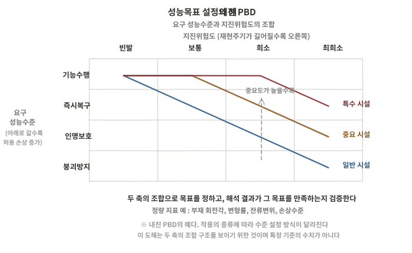
140-4-1-A01 성능목표 설정의 예 — 내진 PBD의 성능수준과 지진위험도
문항 2출처제140회 4교시 2번
지하차도 신축이음장치의 종류별 특징과 설계 시 고려사항
지하차도에 사용하는 신축이음장치의 종류별 특징과 신축이음설계 시 고려사항에 대하여 설명하시오.
교량공학제140회 4교시서술형25점
모범답안
【핵심 키워드】 박스 구간은 온도영향이 작고 부등침하·지반변위·수밀성이 지배한다 — 외기 노출부는 다르다 / 기본 신축량과 특수 상대변위는 나눠 다룬다 / 이음 위치는 불연속 지점과 허용 신축길이를 함께 본다 / 구조체 이음과 포장 이음의 위치를 맞춘다 / 유지관리 접근이 어려워 초기 상세가 수명을 좌우한다
Ⅰ. 서론 — 지하차도의 신축이음은 교량 신축이음과 같은 장치를 쓰더라도 설계를 지배하는 조건이 다르다. 박스 구간은 지중에 있어 온도 변동 폭이 작은 대신, 지반 조건이 바뀌는 지점의 부등침하, 되메움과 지하수위 변화에 따른 지반변위, 그리고 지하수 유입을 막는 수밀성이 요구의 중심이 된다. 게다가 이음부는 차량 하중을 직접 받으면서 점검과 교체가 어려운 위치에 놓이므로, 초기 상세의 완성도가 그대로 수명이 된다.
Ⅱ. 본론
지하차도 신축이음의 조건
온도변화 : 박스 구간은 지중 영향으로 온도변화가 상대적으로 작다. 다만 U형 구간과 개착 접속부처럼 외기에 노출되는 구간은 온도신축의 영향이 커질 수 있어 구간을 나누어 본다
부등침하와 지반변위 : 구조 형식이 바뀌는 곳(U형 옹벽과 박스 구간의 경계), 지반 조건이 바뀌는 곳, 되메움 구간에서 상대변위가 생긴다
건조수축 : 시공 단위별로 타설되므로 초기 수축이 이음에 누적된다. 설계실무요령의 신축량 정의에 온도변화와 나란히 들어가는 항이다
수밀성 : 지하수위 아래에 놓이면 이음부가 곧 누수 경로가 된다. 누수는 구조물 열화뿐 아니라 노면 결빙과 조명·전기 설비 손상으로 이용자 안전에 직결된다
교량 신축이음이 「얼마나 움직이는가」를 먼저 묻는다면, 지하차도는 「어디가 어긋나고 어디로 물이 드는가」를 먼저 묻는다. 이 차이가 장치 선정과 상세를 가른다
종류별 특징
형식은 차륜하중을 직접 지지하는가를 축으로 나누면 정리된다. 그 아래에 신축량 대응 범위가 놓인다
구분
형식
특징 · 유의
비지지형 (맞댐식)
지수판 + 신축 채움재 + 실링재
외측 지수판과 내측 실링재를 층으로 구성. 구조가 단순하고 수밀에 유리. 소신축량 구간. 지수판의 이음·정착 불량이 곧 누수
강재가 차륜하중을 직접 지지해 내구성이 높다. 설계실무요령은 차륜하중을 직접 받아 유지관리가 필요한 바닥슬래브에 방수성·유지보수성·주행성을 감안해 앵글조인트 등을 적용할 수 있다고 한다
모듈러형
여러 셀로 큰 신축량을 분담. 대신축량 구간. 지하차도 본체에는 과대한 경우가 많고 접속 교량 구간 등에 쓰인다
특정 형식을 본체의 표준으로 못박지 않는다. 신축량과 수밀 조건, 차륜하중, 유지관리 조건에 맞는 형식을 고르며, 선정은 발주기관 지침과 현장조건을 따른다
※ 형식별 적용 신축량의 구체 범위는 제작사 사양과 발주기관 지침에 따라 다르다. 수치는 적용 지침 확인 후 확정한다
설계 시 고려사항
이음 위치의 결정 : 구조 형식·지반 조건·시공 단위가 바뀌어 불연속이 생기는 지점과 허용 신축길이를 함께 고려해 정한다. 불연속 지점을 피해 이음을 두면 이음이 아닌 곳에 균열이 생긴다
국도건설공사 설계실무요령(2021) 설계요령 「지하차도공」의 신축이음장치 항은 지하 박스 구간 20~50 m, U형 구조물 20 m 이내를 바람직한 설치 간격으로 제시하고, 그 이상을 적용할 때는 신축이음에 대한 상세검토를 수행하도록 한다
같은 항은 박스와 U형의 접합부에도 신축이음을 두어 거동이 다른 구조물을 분리하도록 정한다
신축량과 부등침하는 다른 항목으로 다룬다. 설계실무요령은 신축량을 온도변화에 의한 신축량과 건조수축에 의한 신축량의 합으로 정의한다
온도변화 : ΔLt = α·L·Δt (α = 1.0×10⁻⁵, Δt = ±20 ℃)
건조수축 : ΔLsh = εsh·L (εsh = 1.5×10⁻⁴)
부등침하는 이 신축량 식에 들어가지 않는다. 다웰바로 억제하는 별개의 항목이며, 단차·상대변위·수밀 상세로 나누어 검토한다
수밀 상세 : 누수방지를 위해 지수판을 설치하되, 지수판은 다웰바 위치보다 바깥쪽에 둔다. 신축이음부의 외벽 방수재는 이중보강한다
지수판·채움재·실링재는 층으로 구성되며 각 층의 연속성이 성능을 정한다. 지수판의 이음과 모서리 처리, 정착 상세가 급소다
다웰바 배치 : 신축이음부에 다웰바를 설치해 지반침하에 따른 부등침하를 억제한다. 설치 위치는 구조검토를 거쳐 상·하부 슬래브와 벽체에 둘 수 있다
구조체 이음과 포장 이음의 정합 : 두 이음의 위치를 맞춘다. 어긋나면 포장이 먼저 파손되고 그 틈으로 물이 든다
배수 계획 : 이음부에서 새는 물을 받아 배출하는 경로를 둔다. 막는 것만으로는 완결되지 않으며, 받아내는 계획이 함께 있어야 한다
유지관리 조건 : 차선 통제 없이 점검할 수 있는지, 교체가 필요할 때 어느 범위를 들어내야 하는지를 설계 단계에서 확인한다
지하차도는 우회로 확보가 어려워 통제 비용이 크다. 교체 가능성이 상세 선정의 실질적 기준이 되는 이유다
Ⅲ. 결론
구분
내용
지배 조건
부등침하·지반변위·수밀성 — 박스 구간은 온도영향이 작다
설치 간격
박스 20~50 m · U형 20 m 이내 · 접합부에도 이음
형식 분류
비지지형 / 지지형 — 차륜하중을 직접 지지하는가가 축
상세의 급소
지수판은 다웰바보다 바깥쪽 · 외벽 방수 이중보강 · 배수 경로
선정 기준
신축량·수밀·차륜하중·교체 가능성 — 발주기관 지침과 현장조건
막는 설계와 받아내는 설계가 함께 있어야 한다. 지수 상세를 아무리 올려도 누수를 완전히 배제하기는 어려우므로, 새는 물을 모아 배출하는 경로를 함께 계획해야 한다
재료 자체보다 연속성이 성능을 가른다. 지수판의 품질보다 그 이음과 모서리, 정착부가 결함의 출발점이 된다. 시공 상세와 검사 계획을 설계도서에 함께 담아야 한다
교체 시나리오를 설계 단계에서 정해야 한다. 지하차도는 우회로 확보가 어려워 차선 통제 비용이 크다. 어느 범위를 어떻게 들어낼 것인지가 정해져 있어야 형식 선정의 근거가 선다
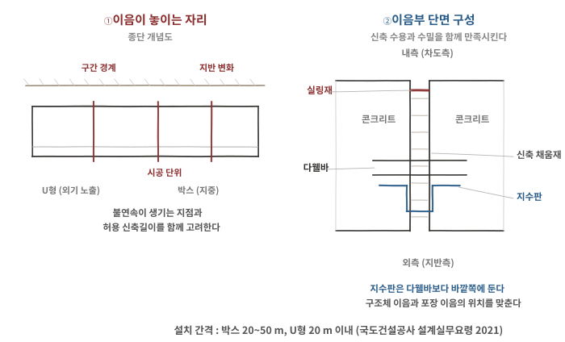
140-4-2-A01 이음이 놓이는 자리(좌)와 이음부의 구성(우)
문항 3출처제140회 4교시 3번
FCM 주두부의 불균형모멘트·변위와 일체화 가설장치
프리스트레스트 콘크리트 박스 거더(PSC Box Girder)교량을 FCM공법(Free Cantilever Method)으로 시공할 때 주두부에서 발생하는 불균형모멘트(Mxx, Myy, Mzz)와 변위(Dx, Dy)의 발생 원인을 설명하고 주두부와 교각을 일체화시켜 저항할 수 있는 경우에 적용 가능한 가설장치 종류와 하중저항 관계에 대하여 설명하시오.
(단, 교축방향은 x, 교축직각방향은 y, 높이방향은 z로 한다)
교량공학제140회 4교시서술형25점
모범답안
【핵심 키워드】 FCM은 완성 전까지 양팔 캔틸레버이므로 좌우 균형이 곧 안정 / 축이 주어졌으므로 성분을 축 둘레 회전으로 정리한다 — 교축방향 휨은 Myy / 일체화 저항은 PC강봉의 인장과 임시 블록의 압축이 이루는 우력 / M = T·a — 강봉 용량과 거리, 압축측 지압이 함께 제한한다 / Mzz는 수평반력의 우력이 받는다
Ⅰ. 서론 — FCM은 폐합 전까지 교각 위에서 좌우로 뻗은 캔틸레버 상태로 유지된다. 완성계에서는 연속보로 거동하지만 가설 중에는 주두부 한 점이 전체를 지탱하므로, 좌우 하중의 작은 차이도 교각 상면에 큰 모멘트로 전달된다. 문제가 축을 x·y·z로 지정한 것은 성분을 뭉뚱그리지 말고 어느 축 둘레의 모멘트인지 구분해 답하라는 요구로 읽힌다. 주두부와 교각을 일체화할 수 있는 경우에는 이 모멘트를 우력으로 받으므로, 장치의 용량뿐 아니라 힘이 이루는 거리가 함께 검토 대상이 된다.
Ⅱ. 본론
불균형모멘트와 변위의 성분
성분
축 둘레 회전
주된 발생 원인
Myy
y축(교축직각) 둘레 회전 → 교축방향 휨. 좌우 캔틸레버의 불균형에 의한 주된 성분
좌우 세그먼트의 시공 시차와 길이 차, 자중 편차, 작업차 이동, 콘크리트 타설 중량
Mxx
x축(교축) 둘레 회전 → 롤링. 횡방향 전도로 이어진다
교축직각방향 편심 작업하중, 횡방향 풍하중, 곡선교의 기하
Mzz
z축(연직) 둘레 회전 → 평면 내 회전(요잉)
좌우 캔틸레버의 평면상 편심, 사교·곡선교의 선형, 편측 풍하중
Dx (교축방향)
주두부의 교축방향 수평변위
온도변화, 프리스트레스 도입, 크리프·건조수축
Dy (교축직각)
주두부의 횡방향 수평변위
풍하중, 편심 작업하중, 지진
성분을 나누는 실익은 저항 방식이 각각 다르다는 데 있다. Myy와 Mxx는 연직 인장·압축의 우력으로, Dx·Dy는 스토퍼와 전단키의 전단으로, Mzz는 떨어져 배치된 수평반력의 우력으로 받는다
Mzz를 전단 하나로 받는다고 보면 장치 배치가 나오지 않는다. 모멘트는 하나의 힘이 아니라 떨어진 두 힘이 받는다는 점이 배치 계획의 근거다
발생 원인
시공 단계 요인 : 좌우 세그먼트의 시공 시차, 형상관리 오차에 따른 자중 편차, 작업차의 이동과 위치, 콘크리트 타설 순서와 타설 중량, 자재 적치
하중 요인 : 작업하중과 장비하중, 풍하중, 온도차(일조에 의한 좌우 비대칭), 지진하중
시간의존 요인 : 크리프와 건조수축, 프리스트레스 도입 시차와 그에 따른 손실
이상 상황 : 작업차의 예기치 못한 이동이나 이탈, 세그먼트 낙하, 거푸집 탈락
정상 시공단계와 비정상·사고 시나리오를 모두 검토한다. 작업차 이탈이나 세그먼트 낙하 같은 비정상상태가 가설장치 설계를 지배할 수 있으며, 어느 시나리오를 어느 수준으로 설정하느냐가 장치 규모를 좌우한다
일체화 저항이 가능한 경우의 가설장치
주두부와 교각을 일체로 묶을 수 있으면 불균형모멘트를 교각 상면에서 우력으로 받는다. 인장 요소와 압축 요소를 짝지어 배치하는 것이 기본 구성이다
저항은 인장측 강봉과 압축측 지압의 평형으로 성립한다. 강봉의 강도만이 아니라 압축블록과 주두부·교각 상면의 지압강도, 그 국부파괴가 함께 제한조건이 된다
장치
저항 성분
하중저항 관계
PC강봉 (고정 강봉)
Myy, Mxx
인장 — 주두부와 교각을 관통해 긴장. 우력의 인장측을 담당
임시 콘크리트 블록
Myy, Mxx, 연직력
압축(지압) — 교각 상면과 주두부 사이에 설치. 우력의 압축측과 연직 지지를 겸한다
스토퍼 · 전단키
Dx, Dy
전단 — 수평 이동을 구속
이격 배치된 스토퍼 · 전단키
Mzz
수평반력의 우력 — 떨어진 두 반력이 평면 회전을 구속
영구 받침의 임시 고정
Dx, Dy
전단 — 폐합 후 해제하여 이동을 허용
저항모멘트는 M = T · a 로 표현된다. T는 인장 요소가 낼 수 있는 힘, a는 인장측과 압축측 사이의 거리다
강봉을 키우는 것만이 답이 아니다. 거리 a를 키우면 같은 강봉으로 더 큰 모멘트를 받는다. 다만 a를 키우면 압축측 지압응력이 집중되고 교각 상면의 국부 응력이 커지므로, 교각 폭과 상면 상세가 함께 제약이 된다
해제 계획이 설계의 일부다. 폐합 후에는 가설장치를 풀어야 완성계의 거동이 성립한다. 해제 순서와 그때의 단면력 변화를 시공단계 해석에 포함한다
설계·시공 시 검토사항
시공단계 해석 : 단계별 하중 조합과 지지 조건 변화를 반영해 각 단계의 최대 불균형모멘트를 구한다. 완성계보다 가설 중이 불리한 경우가 많다
교각과 기초의 검토 : 불균형모멘트는 교각 기둥과 기초에 그대로 전달된다. 가설 중 조건으로 교각 단면과 기초 안정을 확인한다
좌우 균형 관리 : 세그먼트 시공 시차를 제한하고, 작업차 위치와 자재 적치를 관리한다. 계측으로 처짐과 경사를 추적한다
일체화가 불가능한 경우 : 가설 벤트나 별도 지지 구조를 두어 받는다. 다만 본 문항은 일체화가 가능한 경우로 한정하고 있다
Ⅲ. 결론
구분
내용
주된 성분
Myy — 좌우 캔틸레버의 불균형에 의한 교축방향 휨
다른 성분
Mxx(x축 둘레 롤링 → 횡방향 전도) · Mzz(z축 둘레 평면 회전) · Dx·Dy
검토 범위
정상 시공단계와 비정상·사고 시나리오를 모두
일체화 저항
PC강봉 인장 + 임시 블록 압축의 우력 · M = T·a
별도 저항
Dx·Dy는 스토퍼·전단키의 전단, Mzz는 수평반력의 우력
성분을 나누어 답해야 장치가 정해진다. 문제가 축을 지정한 이유가 여기에 있다. 모멘트를 한 값으로 뭉치면 우력으로 받을 것과 전단으로 받을 것이 구분되지 않는다
저항모멘트는 힘과 거리의 곱이지만 제한조건은 셋이다. 강봉의 인장강도, 압축블록과 교각 상면의 지압강도, 그리고 두 힘 사이의 거리다. 거리를 늘리면 압축측 지압이 집중되므로 셋을 함께 놓고 정해야 한다
가설장치는 설치보다 해제가 어렵다. 폐합 후 해제 순서에 따라 완성계에 남는 단면력이 달라진다. 설치 계획과 같은 비중으로 해제 계획을 세우고 시공단계 해석에 반영해야 한다
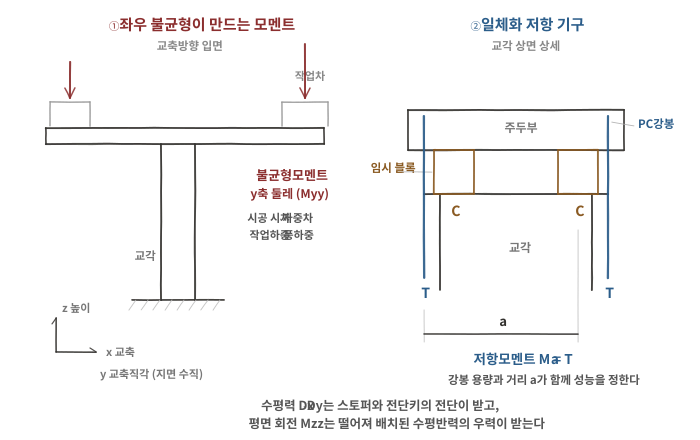
140-4-3-A01 좌우 불균형이 만드는 모멘트(좌)와 일체화 저항 기구(우)
문항 4출처제140회 4교시 4번
3개 강봉의 부재력, 절점 처짐 및 안전성 검토
그림과 같이 강체 천장에 3개의 강봉(트러스 부재)이 연결되어 한 절점 O점에서 만난다. 다음 사항에 대하여 구하시오.
[조 건]
O점에 연직하중 P = 100 kN 작용
중앙의 연직재(①)의 길이 L = 4 m, 단면적 A1 = 800 mm²
좌우 대칭인 경사재(②, ③)는 연직재와 θ = 30°의 각도를 이루고, 각각의 단면적 A2 = 600 mm²
모든 부재는 동일한 재질(탄성계수 E = 200,000 MPa)의 강봉임
1) 매트릭스 구조 해석법을 제외한 기타 구조 해석법으로 각 부재력 N1(①연직재), N2(②, ③ 경사재) 산정
2) O점의 연직처짐 δ
3) 각 부재의 응력을 산정하고, 이 강봉의 허용응력이 140 MPa일 경우 안전성 검토
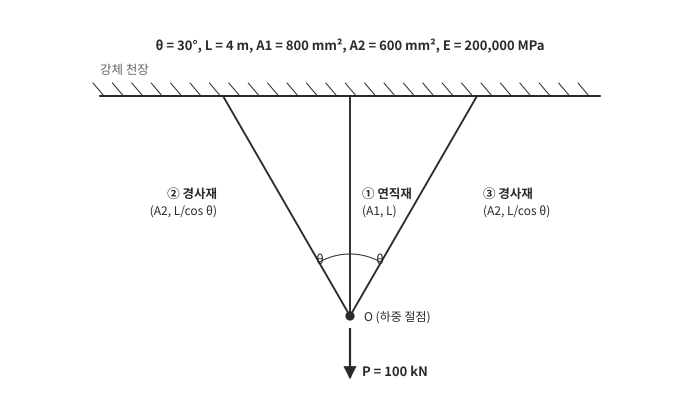
140-4-4-P01 강체 천장에 연결된 3개 강봉 (문제 도면 재작도)
구조역학제140회 4교시계산형25점
모범답안
【핵심 키워드】 미지 부재력 2개에 평형식 1개 → 1차 부정정 / 나머지 한 식은 적합조건이 준다 / 절점 처짐 δ 하나를 미지수로 두면 닫힌다 / 경사재는 신장에 cos θ, 길이에 1/cos θ — cos이 두 번 들어간다 / 응력비는 cos²θ — 단면적이 소거된다
Ⅰ. 서론 — 부재가 셋이고 대칭이므로 미지 부재력은 N1과 N2 둘이다. 절점 O에서 쓸 수 있는 평형식은 연직 방향 하나뿐이므로 1차 부정정이며, 나머지 한 식은 변형의 적합조건에서 나온다. 세 부재가 한 점에서 만나 함께 움직이므로 절점의 연직 처짐 δ 하나를 미지수로 잡으면 각 부재의 신장이 δ로 표현되고 식이 닫힌다. 이때 경사재는 신장이 δ의 투영값이고 길이도 더 길다는 두 가지를 함께 반영해야 한다.
Ⅱ. 본론
적합조건 — 절점 처짐과 부재 신장
천장이 강체이고 절점 O는 대칭이므로 O는 연직으로만 이동한다. 그 크기를 δ로 둔다
연직재 : 부재축이 변위와 나란하므로 신장 Δ1 = δ
경사재 : 변위를 부재축 방향으로 투영하므로 신장 Δ2 = δ · cos θ
경사재는 길이도 L/cos θ 로 더 길다. 신장에 cos θ가 곱해지고 길이로 나눌 때 cos θ가 한 번 더 곱해져, 부재력에 cos²θ 가 나타난다. 이 문항에서 가장 틀리기 쉬운 대목이다
부재력 산정
부재력은 N = EAΔ/L 이므로
N1 = E·A1·δ / L
N2 = E·A2·(δ cos θ) / (L/cos θ) = E·A2·δ·cos²θ / L
차원 확인 : δ = P·L/(E·ΣA) 형태로 [N·mm]/[N/mm²·mm²] = [mm] → 일치
극한 경우 확인 : θ → 0 이면 세 부재가 모두 연직이 되어 δ = P·L/[E(A1+2A2)] 로 수렴한다. 반대로 θ → 90°이면 경사재의 기여가 사라져 δ = P·L/(E·A1) 이 된다. 두 극한이 모두 물리적으로 옳다
Ⅲ. 결론
항목
값
절점 처짐 δ
1.266 mm (↓)
부재력
N1 = 50.65 kN, N2 = 28.49 kN (각 경사재)
응력
σ1 = 63.31 MPa, σ2 = 47.49 MPa
안전성
허용 140 MPa 대비 만족 — 지배 부재는 연직재
응력 관계
σ2 = σ1·cos²θ — 단면적이 소거되어 축변형률 차이가 정한다
평형식만으로는 닫히지 않는다. 미지 부재력이 둘인데 평형식은 하나이므로 적합조건이 반드시 필요하다. 절점 처짐 하나를 미지수로 두는 것이 가장 짧은 길이다
경사재에서 cos이 두 번 들어간다. 신장이 δ·cos θ이고 길이가 L/cos θ이기 때문이다. 한 번만 반영하면 N2가 33 kN 가까이 나와 평형이 닫히지 않으므로, 평형 검산이 이 실수를 잡아준다
부재력 분담과 응력 차이는 다른 이야기다. 부재력 N은 축강성에 따라 배분되지만, 응력은 단면적이 소거되어 축변형률 차이로 결정된다. 본 문제에서 σ2 = σ1·cos²θ 가 되는 이유가 여기에 있다
단면을 바꾸면 전체를 다시 풀어야 한다. 단면적을 조정하면 절점 처짐 δ와 하중 분담이 함께 바뀌므로, 적합조건부터 다시 계산해야 한다
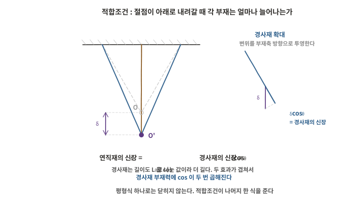
140-4-4-A01 절점 처짐 δ와 각 부재 신장의 관계
문항 5출처제140회 4교시 5번
기둥의 좌굴형상과 좌굴강도를 최대로 하는 단면비
그림과 같은 기둥에 대한 다음 사항에 대하여 설명하시오.
1) A단은 고정, B단은 일방향 힌지일 때 좌굴형상을 작도하고, 좌굴강도가 최대가 되는 단면비를 구하시오.
2) 연직하중 P = 120 kN, 탄성계수 E = 2.1×10⁵ MPa, L = 8 m이고 안전율(FS) = 2 일 때 단면의 크기를 구하시오.
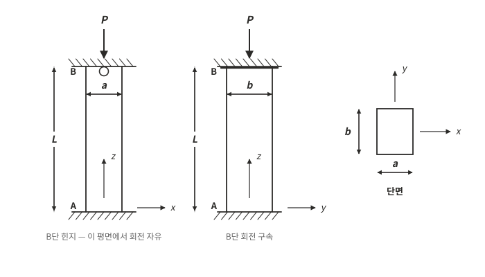
140-4-5-P01 A단 고정, B단 일방향 힌지인 기둥 (문제 도면 재작도)
구조역학제140회 4교시계산형25점
모범답안
【핵심 키워드】 「일방향 힌지」 → 두 평면의 지지조건이 다르다 / x-z 평면은 고정–힌지 K = 0.7, y-z 평면은 고정–고정 K = 0.5 / 좌굴은 약한 쪽이 지배 / 동일 재료량에서 두 방향을 같게 둘 때 최대 / a/b = K1/K2 = 1.4 / 소요 Pcr = FS × P
Ⅰ. 서론 — 이 문항의 출발점은 「일방향 힌지」라는 조건이다. B단이 한 평면에서만 회전이 자유롭다는 뜻이므로 두 평면의 유효좌굴길이계수가 서로 다르다. 기둥은 두 방향 중 약한 쪽으로 좌굴하므로, 한쪽만 키우는 것은 낭비가 된다. 따라서 좌굴강도를 최대로 하는 조건은 두 방향의 좌굴하중을 같게 만드는 것이고, 여기서 최적 단면비가 나온다. 다만 「최대」는 주어진 재료량을 배분하는 문제에서만 성립한다.
Ⅱ. 본론
지지조건의 구분과 좌굴형상
x-z 평면 (폭 a) : A단 고정, B단 힌지 → 고정–힌지. K1 = 0.7
고정단에서 기울기가 0이고 힌지단 쪽으로 부풀며, 고정단에서 약 0.3L 위치에 변곡점이 하나 생긴다
y-z 평면 (폭 b) : A단 고정, B단 회전 구속 → 고정–고정. K2 = 0.5
양단 기울기가 0이고 중앙부가 평행하게 이동하며, 변곡점이 두 개 생긴다
좌굴강도가 최대가 되는 단면비
각 평면의 좌굴하중은 Pcr = π²EI / (K·L)² 이고, 단면2차모멘트는
x-z 평면 (a 방향 휨) : I1 = b·a³/12
y-z 평면 (b 방향 휨) : I2 = a·b³/12
좌굴은 두 방향 중 작은 좌굴하중에서 일어난다. 따라서 동일 단면적(재료량) 조건에서 그 작은 값을 최대로 만드는 배분이 최적이며, 두 좌굴하중이 같아지는 지점이 그것이다
제약 없이 a와 b를 함께 키우면 좌굴강도는 계속 커지므로 「최대」가 존재하지 않는다. 주어진 재료량을 어떻게 배분하는가의 문제로 놓아야 최적 조건이 성립한다
b·a³ / (K1L)² = a·b³ / (K2L)² → a²/K1² = b²/K2²
a / b = K1 / K2 = 0.7 / 0.5 = 1.4 (a : b = 7 : 5)
회전이 더 자유로운 평면(K가 큰 쪽)의 폭을 키워 그 방향의 약함을 보상하는 것이다. 조건이 뒤집히면 비율도 뒤집힌다
세장비 확인 : 약축 회전반경 r = b/√12 = 18.2 mm, 유효좌굴길이 4,000 mm → 세장비 약 220. 오일러 좌굴이 지배하는 영역이므로 탄성 좌굴식 적용이 타당하다
Ⅲ. 결론
항목
값
지지조건
x-z 평면 고정–힌지 K = 0.7 / y-z 평면 고정–고정 K = 0.5
좌굴형상
전자는 변곡점 1개, 후자는 변곡점 2개
최적 단면비
동일 재료량에서 a / b = K1 / K2 = 1.4 (7 : 5)
단면 크기
a = 88.4 mm, b = 63.1 mm (FS = 2)
「일방향 힌지」를 읽어내는 것이 이 문항의 절반이다. 두 평면의 지지조건이 다르다는 것을 놓치면 K를 하나로 잡게 되고, 그러면 최적 단면비라는 문제 자체가 성립하지 않는다
최적은 배분의 문제다. 좌굴은 약한 쪽에서 일어나므로 한쪽만 키우면 그 증가분이 강도에 반영되지 않는다. 같은 단면적으로 가장 큰 좌굴하중을 얻는 배분이 a/b = K1/K2 이며, 제약 없이 단면을 키우는 경우에는 최적이라는 개념 자체가 성립하지 않는다
실무에서는 규격 치수로 올림한다. a = 90, b = 65로 하면 안전율이 2.17이 되어 요구를 만족한다. 다만 비율이 1.38로 최적에서 조금 벗어나므로, 두 방향 좌굴하중을 다시 대조해 어느 쪽이 지배하는지 확인해야 한다
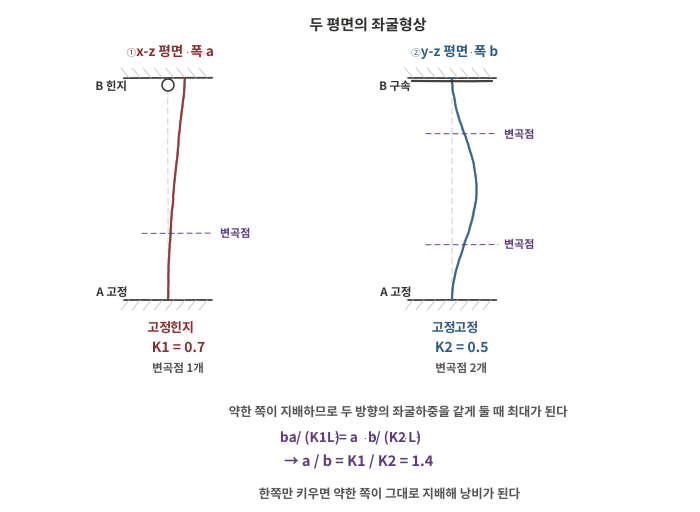
140-4-5-A01 두 평면의 좌굴형상과 최적 단면비
문항 6출처제140회 4교시 6번
비선형 구조해석의 필요성과 비선형 재료 보의 휨응력·처짐
구조물의 비선형 구조해석이 필요한 이유에 대하여 설명하고, 그림과 같이 순수 휨(M)을 받는 지간 L인 단순지지보에서 보 재료의 응력-변형률 관계가 f = Kε⁰·⁴일 경우, 단순지지보에 발생하는 최대 휨응력 f_max과 최대 처짐 δ_max을 구하시오.
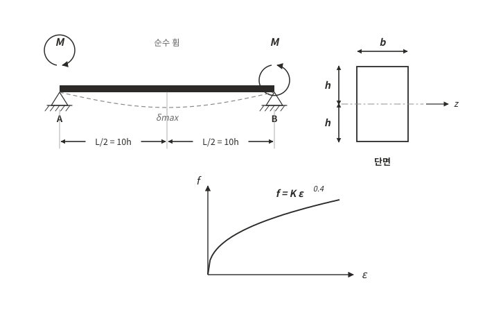
140-4-6-P01 순수휨을 받는 단순지지보와 재료의 응력-변형률 관계 (문제 도면 재작도)
구조역학제140회 4교시계산형25점
모범답안
【핵심 키워드】 순수휨이므로 곡률이 전 구간 일정 — 소변형 근사에서 δ≈κL²/8 / 평면 유지로 변형률은 직선, 응력은 재료 곡선을 거쳐 위로 볼록 / 일반식 f_max = (n+2)M/(2bh²) — n = 1을 넣으면 선형 결과와 일치한다 / 단면 높이는 2h, 지간은 L = 20h
Ⅰ. 서론 — 재료의 응력-변형률 관계가 직선이 아니면 중첩의 원리가 성립하지 않고, 단면력에서 응력으로 넘어가는 관계도 선형식으로 다룰 수 없다. 이 문항은 그 성격을 가장 단순한 형태로 묻는다. 순수휨이므로 곡률이 전 구간에서 일정하고, 평면 유지 가정에 따라 변형률은 여전히 직선으로 분포한다. 달라지는 것은 그 변형률이 응력으로 바뀌는 단계이며, 여기서 응력분포의 형상과 최대응력이 선형 결과와 갈라진다.
Ⅱ. 본론
비선형 구조해석이 필요한 이유
재료 비선형 : 콘크리트와 강재는 일정 수준을 넘으면 응력-변형률이 직선을 벗어난다. 극한상태 검토나 소성 거동을 허용하는 설계에서는 선형 해석으로 실제 내력을 평가할 수 없다
기하 비선형 : 변형이 커지면 평형을 변형 후 형상에서 세워야 한다. 좌굴, 케이블 구조, 대변위 문제가 여기에 해당한다
경계 비선형 : 접촉, 받침 이탈, 균열 개폐처럼 지지 조건이 하중에 따라 바뀐다
중첩의 원리가 성립하지 않는다. 하중을 나누어 풀고 더할 수 없다
다만 비선형이면 언제나 경로의존인 것은 아니다. 소성·손상·접촉처럼 경로의존 거동이 포함될 때 하중 이력과 재하 순서가 결과에 영향을 준다. 시공단계 해석이 필요한 경우가 여기에 해당한다
가정과 단면 조건
평면 유지 : 변형률은 중립축에서 직선으로 분포한다. ε = κ·y
인장·압축 거동 동일 : 문제의 응력-변형률식은 인장과 압축에서 부호만 반대이고 크기 관계는 동일한 것으로 해석한다. 즉 f = K|ε|⁰·⁴ · sgn(ε) 로 본다
음의 변형률에 지수 0.4를 그대로 적용할 수는 없으므로 이 해석이 필요하다. 이 전제 위에서 중립축이 단면 중앙에 온다
소변형 : 곡률과 처짐의 관계에 선형 근사를 적용한다
단면은 폭 b, 전체 높이 2h (중립축 위아래로 각각 h)이고, 지간은 L/2 = 10h 이므로 L = 20h 다
세 가정 중 두 번째가 특히 중요하다. 인장과 압축의 거동이 다르면 중립축이 중앙을 벗어나고 아래 유도가 그대로 성립하지 않는다
최대 휨응력 산정
일반화를 위해 f = Kεⁿ 으로 두고 마지막에 n = 0.4를 넣는다
저항모멘트 : M = ∫ f·y dA = 2∫0^h K(κy)ⁿ · y · b dy = 2Kκⁿ b · h^(n+2)/(n+2)
최대응력은 y = h 에서 : f_max = K(κh)ⁿ = Kκⁿ·hⁿ
두 식에서 Kκⁿ 을 소거하면 f_max = (n + 2)·M / (2 b h²)
n = 0.4 를 넣으면 f_max = 2.4M/(2bh²) = 6M / (5 b h²) = 1.2 M/(bh²)
n = 1 (선형)을 넣으면 1.5M/(bh²) 가 되고, 이는 M/S = M/[b(2h)²/6] 과 정확히 일치한다. 유도가 맞는지 확인하는 장치다
비선형 쪽이 20% 작다. 응력이 단면에 더 고르게 퍼져 중립축에서 먼 곳에만 의존하지 않기 때문이다
최대 처짐 산정
순수휨이므로 곡률 κ가 전 구간에서 일정하다
곡률은 M 식에서 : Kκⁿ = (n+2)M / (2 b h^(n+2)) → κ = [(n+2)M / (2K b h^(n+2))]^(1/n)
n = 0.4 : κ = [1.2 M / (K b h^2.4)]^2.5
소변형 가정에서 κ≈ v″ 이므로, 곡률이 일정한 단순보의 중앙 처짐은 δ_max ≈κ·L² / 8 이다
이는 소변형·소회전 근사에 따른 값이다. 곡률이 일정한 곡선의 정확한 중앙 처짐과는 다르며, 변형이 커지면 근사가 무너진다
L = 20h 이므로 δ_max = κ(20h)²/8 = 50 h²·κ
정리하면 δ_max = 50 h² · [1.2 M / (K b h^2.4)]^2.5 ≈ 78.87 · M^2.5 / (K^2.5 b^2.5 h⁴)
지수 2.5는 1/n 에서 온다. 모멘트가 2배가 되면 처짐은 약 5.7배가 되므로, 선형 재료와 달리 하중과 처짐이 비례하지 않는다는 점이 이 문항의 핵심이다
검산
선형 극한 확인 : n = 1을 넣으면 f_max = 1.5M/(bh²), κ = M/(K·2bh³/3) 이 되어 I = b(2h)³/12 = 2bh³/3 인 선형 결과와 일치한다
차원 확인 : f_max = (n+2)M/(2bh²) 는 [N·mm]/[mm·mm²] = [N/mm²] → 응력 단위
경향 확인 : n이 작아질수록 f_max 계수 (n+2)/2 가 작아진다. 재료 곡선이 더 납작해질수록 응력이 고르게 퍼진다는 물리와 맞는다
문제 본문은 공개된 문제지에서 옮겨 적은 전사본이며, 문제 도면은 원본 이미지가 아니라 같은 조건으로 다시 그린 것입니다(도면 코드 -P01). 답안 도면(-A01)과 해설은 본 서비스의 작성물입니다. 전사 과정의 오류를 발견하시면 각 문항의 신고 기능으로 알려 주세요.
신고하기
어떤 문제인가요?
0 / 500
문제 오류로 접수된 건은 관리자가 원문과 대조해 판정합니다. 전사 오류면 반영하고 원문 자체의 오류면 기각합니다. 화면 프로토타입입니다. 입력한 내용은 전송·저장되지 않으며, 실제 서비스에서는 IP 기준 일일 횟수 제한이 적용됩니다.
✓
신고가 접수되었습니다
관리자가 확인한 뒤 반영하거나 기각합니다.
처리 결과는 별도로 안내되지 않습니다.
관리자프로토타입 · 인증 없음
대시보드
처리할 일을 확인하고 각 화면으로 이동합니다.
신고·추가풀이는 실제 데이터가 없어 예시 데이터로 채웠습니다. 상태 변경은 이 화면 안에서만 유지되며 저장되지 않습니다.
신고 처리예시 데이터
신고 처리
반영은 원문 수정 게시로 이어집니다. 기각하면 원문은 그대로 둡니다.
추가풀이 검토예시 데이터
추가풀이 검토
게시하면 사용자에게 공개됩니다. 반려 사유 입력 여부는 미결 안건이라 선택 입력으로 두었습니다.
문제·풀이
문제·풀이 게시
작성중은 비공개, 게시됨은 사용자에게 공개됩니다. 모범답안이 없는 문항은 작성중으로 둡니다.